Studio Audio AI
Composez des chansons et des instrumentaux complets, avec voix, directement sur votre carte graphique : un style, des paroles, quelques minutes de calcul, et le morceau est dans votre bibliothèque.
Application Windows native : aucun navigateur, aucun serveur, aucun envoi de données. Tout reste sur votre PC.
1. Présentation
Studio Audio AI est une interface de bureau pour le modèle de génération musicale YuE2-3B, exécuté en local par le moteur yue2.cpp (Vulkan). Elle sert à écrire un style et des paroles, lancer les générations, écouter, valider et exporter les morceaux, et préparer des vidéos pour YouTube et TikTok.
Création complète
Chansons (paroles chantées) ou instrumentaux, jusqu'à 6 minutes, en anglais (le mieux géré) ou dans une dizaine d'autres langues (français, espagnol, italien, allemand, portugais, japonais, coréen, mandarin, cantonais).
Rapide
Les solveurs AB2 / AB3 divisent par deux, voire plus, la phase la plus longue : un morceau de 3 minutes se génère en environ 3 minutes sur une RX 6700 XT.
Personnalisable
40 LoRA téléchargeables (chanson française, rock rauque, voix, instruments…), 3 quantifications du modèle, 4 thèmes, plusieurs présentations.
Une vraie bibliothèque
Albums, pochettes, validation, filtres, export FLAC/MP3/WAV avec étiquettes et pochette intégrée, vidéos individuelles.
Fiable
File d'attente avec pause et reprise, pause automatique pendant un jeu, test de santé de la carte, compteurs de mémoire vidéo.
Portable
Un seul dossier autonome (moteur, ffmpeg et aide inclus) ; les modèles se téléchargent au premier lancement.
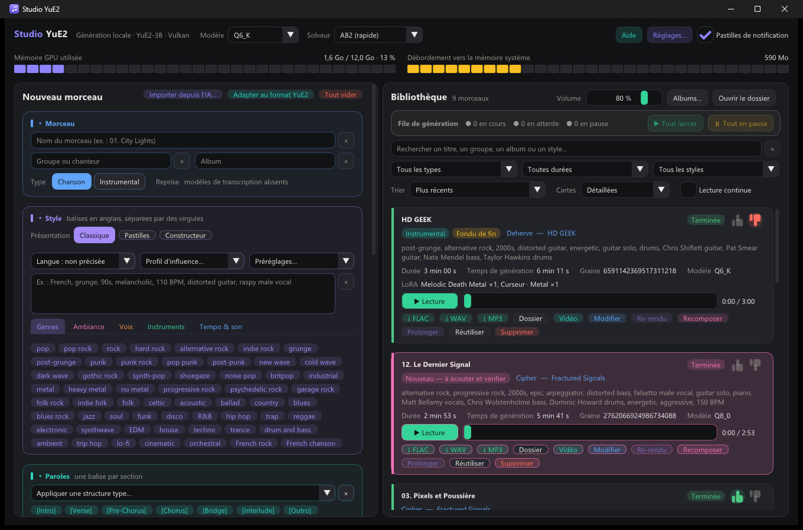
Configuration requise
- Windows 10 ou 11 (64 bits). Interface en 10 langues (voir Langue de l'application).
- Carte graphique compatible Vulkan (AMD, Nvidia ou Intel) avec beaucoup de mémoire vidéo. Testé sur AMD RX 6700 XT (12 Go) ; le modèle principal pèse 2,6 à 3,8 Go selon la quantification et la génération mobilise 7 à 10 Go de mémoire vidéo. Les cartes Nvidia sont prises en charge (réglages adaptés automatiquement, moteur CUDA facultatif) mais n'ont pas pu être testées.
- 16 Go de RAM recommandés (l'application seule consomme environ 50 Mo au repos).
- 5 à 6 Go d'espace disque pour les modèles ; chaque LoRA ajoute 13 à 280 Mo ; chaque morceau d'environ 3 minutes occupe 50 à 70 Mo (WAV + FLAC + MP3).
2. Premier lancement
Au premier démarrage, l'application cherche le moteur de synthèse (yue-synth.exe) puis les modèles : YuE2-3B-*.gguf et YuE2-Vae-F32.gguf, toujours dans le sous-dossier modeles de l'application (1.0.32 : chaque copie du Studio n'utilise que ses propres dossiers modeles, donnees et Audios, pour que vous sachiez toujours où sont vos modèles, vos LoRA et vos styles). S'ils manquent, une fenêtre propose de les télécharger dans ce dossier, ou de l'ouvrir pour y copier vos fichiers (modèles dans modeles\musique, LoRA dans modeles\lora). Les Réglages affichent le chemin de ces dossiers ; toute suppression demande confirmation en montrant le chemin complet, et un fichier situé hors du dossier du programme n'est jamais supprimé.
Si le modèle est absent, une fenêtre propose :
- Oui — télécharger les modèles depuis Hugging Face (environ 4,6 Go : YuE2-3B en Q6_K, le décodeur audio, les modèles de transcription et la LoRA instrumentale) dans
modeles. Une fenêtre de progression s'affiche ; en cas de coupure, relancez l'application : le téléchargement reprend là où il s'était arrêté. - Non — indiquer un dossier qui contient déjà un modèle
YuE2-3B-*.ggufetYuE2-Vae-F32.gguf(directement ou dans un sous-dossiergguf). Le choix est mémorisé. - Annuler — quitter.
modeles\musique\ (modèles) et modeles\lora\ (LoRA) avant de lancer l'application. Le fichier modeles\LISEZMOI.txt liste les fichiers attendus.Fichiers de modèles
| Fichier | Rôle | Taille |
|---|---|---|
YuE2-3B-Q6_K.gguf | Modèle principal (par défaut) | 2,94 Go |
YuE2-3B-Q8_0.gguf | Modèle principal, qualité maximale | 3,81 Go |
YuE2-3B-Q5_K_M.gguf | Modèle principal, le plus léger | 2,62 Go |
YuE2-Vae-F32.gguf | Décodeur audio (obligatoire) | 0,53 Go |
SheetSage2-Q8_0.gguf + MERT-v2-FullSong-Q8_0.gguf | Transcription de mélodie (reprises) | 0,1 + 0,9 Go |
adapters\ar_lora_inst_v3abc.bf16.safetensors | LoRA du mode Instrumental | 0,14 Go |
3. La fenêtre principale
La barre du haut
- Modèle — liste déroulante rapide : modèle utilisé pour les prochains morceaux (Q8_0, Q6_K, Q5_K_M…). Le modèle par défaut au démarrage se règle dans Réglages.
- Solveur — méthode et nombre de pas de la phase audio : AB3 16, AB3 20, AB3 24, Euler 32, AB2 32, AB3 32 ou MP 32, classés du plus rapide au plus lent. Voir Performances.
- Aide — ouvre cette page (raccourci F1).
- Réglages… — ouvre la fenêtre des réglages. Le bouton devient orange si le pilote graphique a changé depuis le dernier test de santé.
- Pastilles de notification — active l'icône de la zone de notification (voir Notifications).
Les quatre compteurs : mémoire vidéo, débordement, CPU et GPU
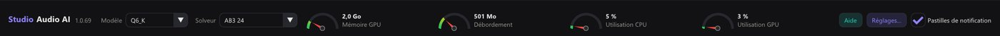
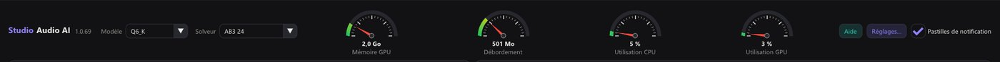
Dans l'en-tête, entre le solveur et le bouton Aide, quatre compteurs à aiguille, relus toutes les 2 secondes. Réglages › Système propose deux styles : Sport (grands cadrans) ou Compact (plus de place pour la bibliothèque). Au survol, une bulle donne le détail. À côté du nom « Studio Audio AI », l'en-tête affiche le numéro de version et, quand une version plus récente est publiée, une pastille orange « Mise à jour x.y.z » qui ouvre la page de téléchargement (voir Réglages › Système).
- Mémoire GPU — mémoire dédiée occupée sur la carte, tous programmes confondus (« 9,7 Go »).
- Débordement — mémoire système que la carte utilise quand sa mémoire est pleine. Le compteur est plein à 2 Go ; quelques dizaines de Mo sont normaux, un débordement se voit dès 200 Mo.
- Utilisation CPU — charge du processeur, tous programmes confondus (comme le Gestionnaire des tâches).
- Utilisation GPU — charge de la carte graphique : moteur le plus chargé (3D, calcul, vidéo…), tous programmes confondus. Pendant une génération, elle doit rester proche du maximum ; une valeur basse avec un débordement important signale une carte saturée par d'autres programmes.
- Les compteurs, comme toutes les barres de progression de l'application, suivent un dégradé du vert au rouge vif (jaune puis orange entre les deux). Sur le compteur GPU, un repère orange marque la limite réglée dans Réglages › Système ; avec une limite, le compteur montre la moyenne des 16 dernières secondes.
Le raccourci clavier et le menu contextuel
- F1 ouvre l'aide.
- Dans tous les champs de texte : Ctrl+C / X / V, et un clic droit ouvre un menu Couper / Copier / Coller / Tout sélectionner.
- Les blocs du formulaire se replient d'un clic sur leur titre.
4. Créer un morceau
Le formulaire « Nouveau morceau » se compose de cinq blocs : Morceau, Style, Paroles (ou Structure en instrumental), LoRA et Génération. Chaque bloc se replie d'un clic sur son titre (flèche ▾ / ▸) ; replié, il affiche un résumé de son contenu, et l'état est mémorisé.
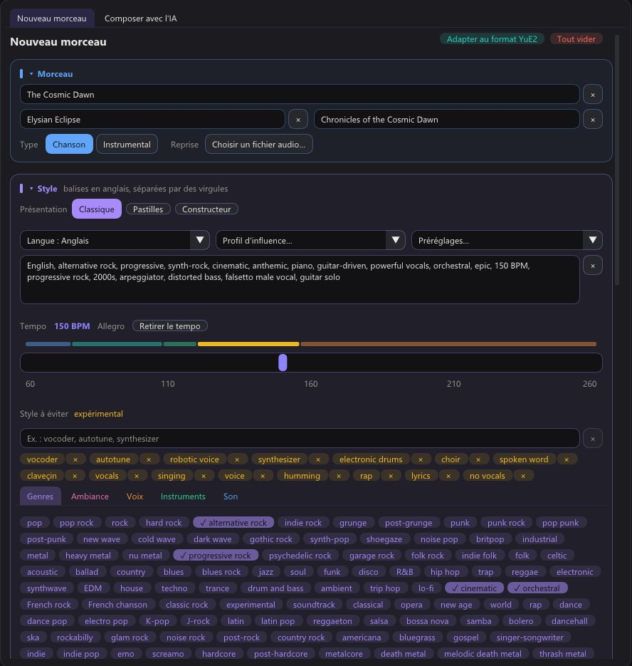
4.1 Le bloc Morceau
- Nom du morceau — obligatoire. Un numéro en tête (« 01. City Lights ») est reconnu comme numéro de piste ; il sert aux exports et au tri « N° de piste ». Les suffixes « (re-rendu) » et « (recomposé) » ajoutés automatiquement ne s'empilent jamais.
- Groupe ou chanteur et Album — facultatifs mais utiles : les morceaux ayant le même groupe et le même album forment un album dans la fenêtre « Albums » (pochettes, export, vidéos). Chaque champ a un bouton ✕ pour l'effacer.
- Type — Chanson (paroles chantées) ou Instrumental (voir Instrumentaux). Chaque mode garde son propre texte de structure.
- Reprise — « Choisir un fichier audio… » : le morceau choisi est transcrit (mélodie) puis rechanté dans votre style. Voir Reprises. Le texte « modèles de transcription absents » signale que SheetSage2 et MERT ne sont pas installés.
4.2 Le bloc Style
Le style est une liste de balises en anglais, séparées par des virgules (« alternative rock, 2000s, melancholic, 96 BPM, distorted guitar »). C'est le texte qui guide le genre, l'ambiance, la voix et les instruments.
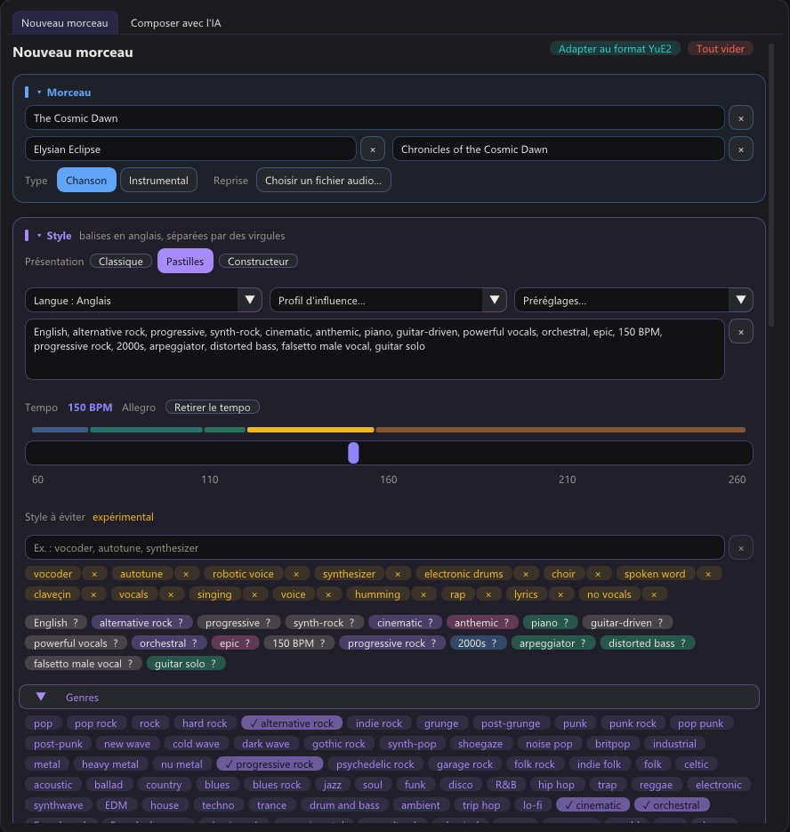
- Langue — non précisée, Anglais, Français, Espagnol, Italien, Allemand, Portugais, Japonais, Coréen, Mandarin ou Cantonais. La langue choisie est placée en première balise du style (« French, … »). YuE2 chante surtout l'anglais ; les autres langues sont possibles mais moins naturelles. Le choix est mémorisé.
- Profil d'influence… — 42 profils qui remplissent le style avec le son d'un groupe ou d'un genre : genres, époque, instruments, type de voix (sans aucun nom de musicien). Les profils n'imposent pas de tempo (BPM).
- Préréglages… — mémorisent un style. À l'enregistrement (« Enregistrer le style actuel… »), vous pouvez y inclure les LoRA cochées avec leur force et la structure des paroles (liste des sections). Choisir un préréglage applique le tout ; les structures ne remplacent des paroles déjà écrites qu'après confirmation. Une LoRA du préréglage non installée est signalée. « Supprimer » retire le préréglage courant. Depuis la version 1.0.10, un préréglage peut aussi mémoriser le style à éviter et sa force (case « Inclure le style à éviter » à l'enregistrement) ; les préréglages plus anciens ne modifient pas ce champ.
- Champ de style — zone multiligne avec ascenseur ; le retour à la ligne est « doux » (il ne modifie pas le texte). Bouton ✕ pour vider.
- Tempo — sous le champ, un curseur de 60 à 260 BPM, par pas de 1, posé sur une barre colorée par mouvement (Largo, Andante, Moderato, Allegro, Presto) ; la valeur et le nom du mouvement s'affichent au-dessus. Le curseur lit et écrit la balise « 120 BPM » du style (une seule à la fois, comme les balises de tempo des catégories) ; sans balise, le tempo est « non défini » et le curseur est grisé. « Retirer le tempo » supprime la balise ; Ctrl+clic sur le curseur permet de taper un nombre.
- Style à éviter expérimental — sous le tempo, des balises que le morceau doit éviter (« vocoder, autotune »), avec des suggestions cliquables et un curseur Force (1,5 conseillé, de 1,2 à 3). Le moteur compose en parallèle une version guidée par ces balises et s'en éloigne (guidage « CFG »). YuE2 n'a pas été entraîné pour cela : jugez l'effet à l'oreille, en comparant avec la même graine sans le champ. Champ rempli : composition environ 1,3 fois plus lente et environ 2,7 Go de mémoire vidéo en plus ; vide, rien ne change. La suite d'un morceau reprend son style à éviter ; l'info-bulle du morceau dans la bibliothèque le rappelle. Balises rapides : chaque terme tapé dans le champ devient une balise rapide (mémorisée à la fin de la saisie ou à l'envoi) ; la croix « × » d'une balise la supprime après confirmation. La liste se gère aussi dans Réglages › Génération.
- Catégories de balises — Genres, Ambiance, Voix, Instruments, Son, chacune d'une couleur, soit environ 335 balises (110 genres, 68 ambiances, 50 voix et timbres, 86 instruments, 20 balises de tempo général, d'époque et de son ; le tempo précis se règle avec le curseur). Un clic ajoute ou retire la balise (✓ = active). YuE2 comprend un texte libre : vous pouvez aussi taper n'importe quelle balise dans le champ de style ; les listes reprennent les balises les plus fréquentes du vocabulaire d'entraînement publié pour la famille YuE (genres, instruments, ambiances, timbres de voix), traduites en balises courtes en anglais. Une balise de tempo « 120 BPM » remplace toute autre balise BPM.
Les trois présentations du bloc
Le commutateur « Présentation », en haut du bloc, change l'affichage sans toucher au contenu :
| Présentation | Principe |
|---|---|
| Classique | Onglets par catégorie, balises en pastilles cliquables. |
| Pastilles | Les balises du style en pastilles colorées retirables (✕), puis des sections de catégories qui se replient. |
| Constructeur | Un sélecteur par catégorie (« Genres : rock, post-punk ▾ ») qui ouvre une liste de balises à cocher. |
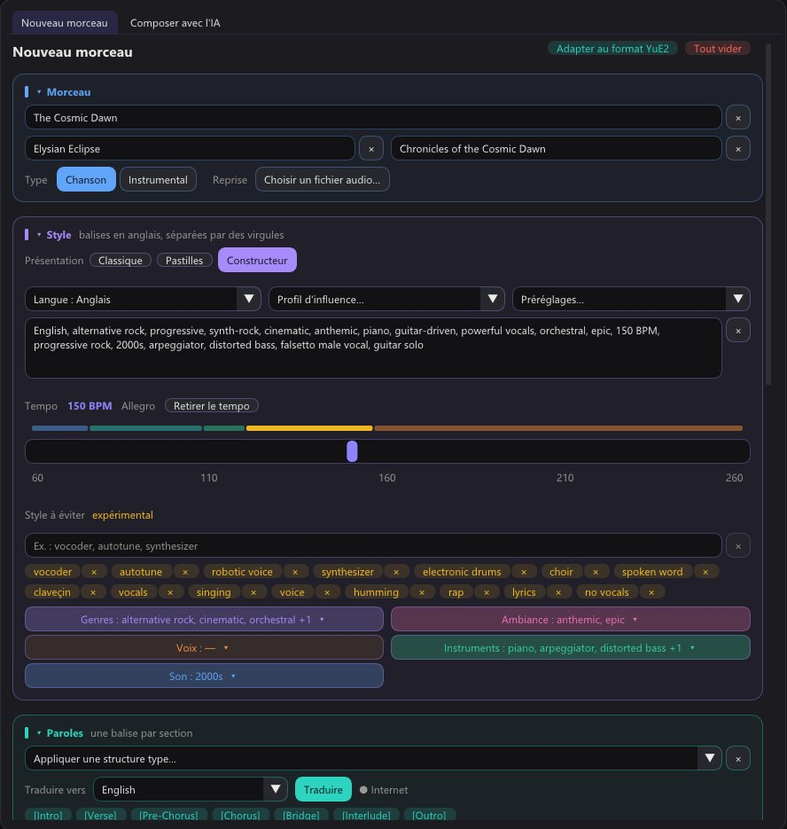
4.3 Adapter au format YuE2
Beaucoup d'assistants d'écriture produisent des prompts « Suno » (titre, style en prose française, sections détaillées). YuE2 attend des balises courtes en anglais et des sections simples. Collez le titre, le style et les paroles dans le formulaire, puis cliquez sur Adapter au format YuE2 (barre du formulaire) :
- Bloc Titre — extrait le titre, le numéro de piste, l'album et le groupe, qui remplissent les champs et sont écrits dans les étiquettes des fichiers.
- Bloc Style — le style en français est traduit en balises anglaises ; les balises explicites passent avant les profils d'influence ; le style est plafonné à une vingtaine de balises pour rester cohérent.
- Bloc Structure — les sections sont ramenées aux balises YuE2 ([Intro], [Verse], [Pre-Chorus], [Chorus], [Bridge], [Outro]) ; les descripteurs propres à chaque section sont ignorés (ils rendaient le son confus) ; un refrain répété laissé vide est recopié ; les parenthèses sont retirées. Le BPM écrit dans les paroles prime sur celui du style.
- En mode instrumental, la conversion produit une structure sans texte.
(La fenêtre « Importer depuis l'IA… » a été retirée en version 1.0.1 : collez directement dans le formulaire.) Le script d'instruction destiné à votre IA est fourni dans le fichier prompt_YuE2.md.
4.4 Le bloc Paroles / Structure
Le texte est découpé en sections par des balises entre crochets : [Intro] [Verse] [Pre-Chorus] [Chorus] [Bridge] [Interlude] [Outro]. Les boutons de balises insèrent la section à la position du curseur, avec les sauts de ligne qui conviennent.
- Appliquer une structure type… — 11 structures prêtes : Couplet/refrain (ABAB), Pop avec pont (ABABCB), Pop avec pré-refrain, Refrain d'ouverture, Double refrain final, Ballade, Classique AABA (32 mesures), Strophique (AAA), Rock avec solo, Électro montée/drop, Court (≈ 1 min). Si des paroles sont déjà écrites, une confirmation précède leur remplacement.
- Mes structures — « Enregistrer la structure actuelle… », en bas de la même liste, mémorise les sections du champ sous un nom de votre choix. Elle apparaît ensuite sous « Mes structures », pour une chanson comme pour un instrumental ; la croix à droite la supprime (avec confirmation). Les structures des packs importés sont rangées sous le nom du pack.
- Une chanson demande du texte sous chaque section chantée ; Intro, Outro et Interlude restent sans texte.
- Aucune parole dans la structure : au lancement de la génération, l'application retire du style toutes les balises de voix (type et timbre de voix, chœurs, langue chantée), car le modèle invente sinon des paroles pour remplir les sections vides ; une notification indique le nombre de balises retirées. Le formulaire n'est pas modifié, seul le morceau généré reçoit le style nettoyé.
- Instrumental : même nettoyage du style (voix, chœurs, langue) à chaque génération. Avec la LoRA instrumentale, les sections gardent leurs balises ([verse], [chorus]…), que cette LoRA connaît et qui ne reçoivent pas de texte ; avec le « Modèle de base », couplets, refrains et ponts sont envoyés comme
[interlude]pour qu'aucune section ne puisse recevoir de texte. - En instrumental, le bloc s'appelle « Structure » : une balise par ligne, en minuscules, sans texte (
[intro],[verse]…) ;[interlude]n'existe pas (la LoRA instrumentale ne le connaît pas) et devient[bridge].
Traduire les paroles
Sous les boutons de structure, la ligne Traduire vers [langue] [Traduire] traduit les lignes chantées dans une autre langue sans toucher à la structure : les balises de section et les lignes vides restent à leur place, une ligne traduite par ligne d'origine. La liste commence par les 10 langues chantées par YuE2, puis les autres (le résultat chanté y est incertain). Avec Internet, la traduction passe par Google Traduction (gratuit, plus de 100 langues) ; sans connexion, le modèle local prend le relais (une vingtaine de langues, exécuté par le processeur, 20 s à 1 min) et la liste ne garde que ses langues. Après une traduction vers une langue de YuE2, la balise de langue du style est mise à jour. Annuler la traduction remet le texte d'origine tant que vous n'avez pas modifié le résultat. Réglages : Traduction des paroles.
4.5 Le bloc LoRA
Voir la section dédiée : Les LoRA. En résumé : des cartes à cocher, une force par LoRA, le mot déclencheur ajouté automatiquement au style, cumul possible.
4.6 Le bloc Génération
En haut du bloc, toujours visibles (même replié) : le bouton Générer la chanson / l'instrumental / la reprise et le bouton Ajouter en pause. Ils restent grisés tant que le nom, le style ou (pour une chanson) les paroles manquent, avec le message correspondant.
| Option | Effet |
|---|---|
| Mode de composition | Sans partition (plus rapide) — par défaut ; Mélodie seule et Complet (mélodie + accords) font d'abord écrire une partition au modèle, ce qui ajoute 15 à 25 s mais peut mieux structurer certains morceaux (la LoRA « rock rauque » recommande le mode complet). |
| Graine | -1 = aléatoire. Une graine fixe donne la même composition (à modèle, style et paroles identiques). La graine d'un morceau terminé s'affiche sur sa carte (« Graine ») : un clic la sélectionne, Ctrl+C ou un clic droit la copie ; collez-la ensuite dans ce champ (Ctrl+V ou clic droit › Coller). Un clic droit sur le champ propose aussi « Aléatoire (-1) ». |
| Durée automatique | Cochée : le plafond est calculé (chanson : 6 minutes maximum, le modèle termine à la fin des paroles ; instrumental : la durée estimée de la structure). Décochée : vous fixez le plafond (10 à 360 s) ; l'estimation « ≈ 3 min 30 » est affichée. |
| Fin en fondu sur la structure | Voir La fin des morceaux. |
| Versions | 1 à 3 : génère plusieurs variantes avec des graines différentes, l'une après l'autre. |
| Moteur instrumental | (Instrumental seulement) « LoRA instrumentale » (par défaut) ou « Modèle de base ». |
4.7 Composer avec l'IA
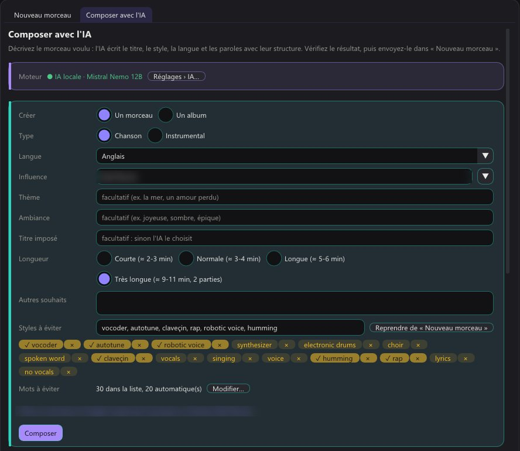
L'onglet Composer avec l'IA, à côté de « Nouveau morceau », fait écrire un morceau complet par une IA de langage. Remplissez la phrase « Créer un morceau en langue inspiré par groupe ou chanteur sur le thème thème » (ambiance, titre imposé, longueur et autres souhaits sont facultatifs ; case Instrumental pour une structure sans paroles), puis cliquez sur Composer.
- Un album d'un coup (1.0.33) : choisissez Un album en haut de l'onglet, le nombre de morceaux (1 à 50), et si vous le souhaitez le titre de l'album et le nom du groupe (vides : l'IA les choisit). Le type peut être Chanson, Instrumental ou Mélangé (avec « Dont instrumentaux » : 0 = aucun instrumental ; jamais plus que le réglage Instrumentaux max par album de Réglages › IA, 2 par défaut). L'IA établit d'abord le plan de l'album (groupe, titre, un titre et un sujet différents pour chaque morceau, avec un son commun mais un tempo et une ambiance qui varient), puis écrit les morceaux un par un ; l'IA locale ne charge son modèle qu'une fois. Chaque morceau est ajouté à la file en pause avec le groupe, l'album et son numéro de piste, les LoRA cochées de « Nouveau morceau » (force et mot déclencheur) et ses réglages (durée, versions, modèle, solveur) ; « Nouveau morceau » n'est pas modifié. « Arrêter » garde les morceaux déjà écrits.
- Mots à éviter (1.0.33, Réglages › IA) : une liste de mots que l'IA ne doit employer ni dans les titres ni dans les paroles (au départ : nuit, cœur, âme, rêve, lumière, feu, étoile, ombre… et leurs équivalents anglais), modifiable, avec « Rétablir la liste par défaut ». Les mots qui reviennent dans au moins 3 des 15 derniers morceaux écrits par l'IA sont évités aussi automatiquement (case à décocher, bouton « Oublier les derniers morceaux »). Carte Pochettes (1.0.36) : service d'images (local : Z-Image Turbo sur la carte graphique, environ 40 s par image 768 × 768 et 7 Go de mémoire vidéo sur une RX 6700 XT, modèle de 6,7 Go à télécharger au clic dans
modeles\images; en ligne : OpenAI gpt-image-1, xAI, Together FLUX.1 schnell ou service compatible OpenAI, avec la clé d'API du même service). Le champ revient à la ligne tout seul selon sa largeur, et le bouton « Supprimer les doublons » retire les mots en double (accents, majuscules et pluriels ignorés : « Rêve » et « rêves » comptent pour un). Si un morceau contient quand même un mot interdit, le Studio redemande une fois. Les titres déjà écrits dans un album sont transmis pour ne pas les répéter. - Morceaux de l'album (1.0.36) : dans la carte de l'album, un clic sur un morceau affiche son titre, son style, sa langue, sa structure et ses paroles dans « Résultat » (avec « Enregistrer comme style personnalisé… »). Le dernier album écrit est gardé (fichier
config\dernier_album.json) et retrouvé au prochain lancement. - Pochettes (1.0.36) : case Créer les pochettes (et, en option, les images YouTube 16:9 et TikTok 9:16). L'IA décrit la pochette dans le plan de l'album ; les images sont créées après l'écriture de tous les morceaux et leur mise en file, en pause, puis rangées comme pochettes de l'album (intégrées aux fichiers exportés). Une image déjà présente n'est jamais remplacée sans confirmation. Le service se choisit dans Réglages › IA › Pochettes. Pendant la création, une fenêtre au centre de l'application indique l'image en cours et le temps écoulé (bouton Annuler) ; elle se ferme seule à la fin (1.0.37).
- Instrumentaux sans voix (1.0.37) : pour chaque morceau instrumental, l'IA reçoit la consigne d'un style sans voix, et le Studio s'en assure de lui-même : balises vocales retirées du style, « instrumental, no vocals » ajouté, et voix (vocals, singing, voice, choir, humming, spoken word, rap, lyrics) ajoutées au « Style à éviter » du morceau.
- LoRA (1.0.35) : le bloc LoRA de « Nouveau morceau » figure aussi dans l'onglet. Ce sont les mêmes cases et les mêmes forces : cocher, décocher ou régler une LoRA dans un onglet se retrouve aussitôt dans l'autre.
- Styles à éviter (1.0.34) : le même champ que dans « Nouveau morceau », avec ses balises rapides, repris de « Nouveau morceau » au premier affichage (bouton « Reprendre de « Nouveau morceau » »). L'IA reçoit la consigne de ne pas proposer ces styles, ils sont retirés du style écrit et ils deviennent le « Style à éviter » de chaque morceau envoyé (seul ou d'un album).
- Enregistrer comme style personnalisé (1.0.34) : le style écrit par l'IA (morceau seul, son commun de l'album ou style de chaque morceau de l'album) s'ajoute à vos styles (liste « Préréglages… » du bloc Style), avec en option les LoRA cochées de « Nouveau morceau » et les styles à éviter. Le nom proposé est celui du groupe ou le titre ; si l'un de vos styles porte déjà ce nom, le Studio demande : Remplacer ou Garder les deux.
- Le nom du groupe et le titre de l'album choisis par l'IA sont aussi vérifiés contre les mots à éviter (1.0.34) : en cas de mot interdit, le plan de l'album est redemandé une fois. Ceux que vous tapez vous-même ne sont jamais modifiés.
- La consigne envoyée à l'IA impose une réponse structurée : titre, langue, style (balises courtes en anglais) et paroles avec leurs sections.
- La réponse est ensuite nettoyée : sections ramenées aux balises YuE2 ([Intro], [Verse], [Pre-Chorus], [Chorus], [Bridge], [Interlude], [Outro]) sans description ni numéro, rien sous les balises instrumentales (pas de description de solo), indications de jeu et « (x2) » retirés. Le nombre d'éléments retirés est affiché.
- Le résultat (titre, style, langue, structure) s'affiche et est rangé aussitôt dans Nouveau morceau (chanson ou instrumental). Si le formulaire contient déjà des paroles écrites, une confirmation est demandée avant de les remplacer. Le profil d'influence du Studio complète le style si la case est cochée, et les mots déclencheurs des LoRA cochées sont gardés.
- La réponse de l'IA est présentée en texte lisible (titre, style, langue et paroles séparés par une ligne vide) dans un champ modifiable : bouton Copier ; après une correction à la main, ou en y collant la réponse d'un autre outil, cliquez sur Relire la réponse.
- Avec l'IA locale intégrée, la demande n'est possible qu'au repos (aucune génération de morceau en cours) : le modèle est chargé, écrit le morceau, puis libère la carte graphique. Pendant ce temps, aucune génération ne peut démarrer.
Le moteur se choisit dans Réglages › IA (paroles).
5. Instrumentaux
Le mode Instrumental génère de la musique sans voix. Il utilise par défaut la LoRA ar_lora_inst_v3abc (lancée automatiquement) et une structure en balises minuscules, sans texte.
- Choisissez des sections cohérentes avec la durée voulue : l'estimation compte environ 15 s pour une intro, 30 s pour un couplet ou un refrain, 25 s pour un pont, 20 s pour une outro.
- Le modèle n'émet jamais de « fin » en instrumental : le morceau est donc toujours arrêté au plafond de durée, avec un fondu de fin. Voir La fin des morceaux pour le régler.
- Précisez des instruments dans le style et évitez les balises de voix.
6. Reprises (cover)
Une reprise rejoue la mélodie d'un enregistrement existant dans un autre style : « Reprise » → « Choisir un fichier audio… » (MP3 ou WAV). L'application transcrit la mélodie (SheetSage2 + MERT), puis YuE2 la chante avec votre style et vos paroles.
- Les paroles doivent tenir sur la mélodie : mieux vaut les paroles d'origine, ou de nouvelles paroles avec le même nombre de syllabes ligne par ligne, sinon la voix dérive.
- Pour une chanson, la mélodie seule guide la voix ; pour un instrumental, la partition complète (accords) est utilisée. Les erreurs de transcription se retrouvent dans la reprise.
- La durée est celle du fichier + 15 s (6 minutes maximum). Le bouton de génération devient « Générer la reprise ».
- L'option est grisée si les modèles de transcription sont absents.
Analyser le style du fichier
Si le modèle d'analyse audio est installé (Réglages › Analyse audio), le fichier choisi est analysé en tâche de fond (barre de progression, bouton « Annuler » ; environ 1 minute pour un morceau de 5 minutes). Le bloc « Analyse du fichier » propose ensuite des balises de style en pastilles cochables (survol = origine et pourcentage de confiance) :
- Genres — les styles les plus probables parmi 400 genres Discogs, traduits en balises YuE2 (« synth-pop », « gothic rock »…) ; les trois premiers sont cochés.
- Ambiance et Instruments — humeur dominante (mélodique, énergique, sombre…) et instruments reconnus (guitare électrique, synthétiseur, batterie…).
- Voix — voix masculine ou féminine (modèle d'étiquetage), puis registre déduit de la mélodie chantée : voix grave, baryton, ténor, alto, mezzo-soprano, soprano.
- Tempo et tonalité — « 130 BPM » (qui règle aussi le curseur de tempo) et « A minor key », lus sur la partition transcrite.
Deux boutons : Appliquer au style et aux paroles ajoute les balises cochées au style (sans doublon, un seul tempo) et, si « Reprendre la structure détectée dans les paroles » est coché, remplace les paroles par un squelette de sections détectées ([Intro], [Verse], [Chorus], [Interlude]…) ; si le champ contient déjà des paroles, une confirmation est demandée. Appliquer et générer est le mode automatique : mêmes réglages, puis la génération démarre aussitôt (le titre est repris du nom du fichier s'il est vide) ; sans paroles à chanter, ou si le fichier est instrumental, la reprise est générée en instrumental.
Paroles. Si le modèle de transcription est installé (Réglages › Transcription des paroles) et que le fichier contient de la voix, Whisper écrit aussi les paroles (environ 35 s de plus pour 5 minutes) et détecte leur langue. La case « Reprendre les paroles détectées » (cochée par défaut) montre un aperçu : les lignes sont rangées dans les sections détectées ([Verse], [Chorus]…) ; « Appliquer » les place dans le bloc Paroles (confirmation si le bloc contient déjà du texte), règle la langue du style, et « Appliquer et générer » lance la reprise avec ces paroles. La transcription automatique n'est pas parfaite sur de la musique : relisez et corrigez les paroles avant de générer. Les phrases que Whisper invente parfois sur de la musique (« Thank you for watching… », « Sous-titres réalisés par… », « Abonnez-vous ») sont écartées.
Paroles trouvées sur Internet. Si l'option est active (Réglages › Analyse et paroles, cochée par défaut), l'application devine le groupe et le titre du morceau (étiquettes du fichier, sinon son nom et ses dossiers, par exemple The Sisters of Mercy\1990.Vision Thing\08 I Was Wrong.mp3) et cherche ses paroles sur lrclib.net, une base de paroles libre et gratuite. Si les mots entendus par Whisper s'y retrouvent, ces paroles remplacent la transcription ; la structure est reconstruite à partir des strophes (strophe répétée = [Chorus], autre = [Verse], strophe unique après le deuxième refrain = [Bridge], [Intro] et [Outro] repris de l'analyse). Une ligne sous les balises indique le résultat : paroles trouvées (avec la source), morceau introuvable, paroles trop différentes de ce que Whisper a entendu, ou pas de connexion. Dans tous ces cas, la transcription Whisper est gardée et rien ne bloque : sans Internet, la recherche abandonne en quelques secondes.
Pendant une génération, l'analyse se fait sans partition (pas de tempo, de tonalité ni de structure), pour ne pas disputer la carte graphique. Le résultat est une aide à la saisie : vérifiez les balises avant de générer. L'analyse automatique à la sélection se désactive dans les Réglages.
7. Les LoRA
Une LoRA est un petit fichier qui spécialise le modèle dans un style, une voix ou un instrument. Elle agit sur la composition (moitié « AR »), sur le son (moitié « NAR ») ou sur les deux. Elle n'« embellit » pas en général : elle oriente.
Choisir les LoRA d'un morceau
- Le bloc LoRA du formulaire affiche une carte par LoRA installée : case, nom, type (Style, Artiste, Instrument, Curseur, Compos., Perso), description sur deux lignes et, une fois cochée, un curseur de force (1,0 = réglage conseillé en général).
- Elles sont cumulables : cochez-en autant que vous voulez, chacune avec sa force.
- Une LoRA qui a un mot déclencheur (par ex.
chnsn,grvl,jpstyle26) l'ajoute automatiquement au début du style quand vous la cochez, et le retire quand vous la décochez. - Le choix est mémorisé avec chaque morceau (visible sur sa carte), repris par la recomposition, le re-rendu et « Réutiliser ».
- La LoRA instrumentale n'apparaît pas ici : elle est liée au mode Instrumental.
Télécharger des LoRA
Dans Réglages › LoRA, un tableau liste un catalogue de 40 LoRA (nom, type, taille, mot déclencheur). Le bouton Télécharger ↓ place le fichier directement dans modeles\lora\ ; une barre de progression et un bouton ✕ permettent de suivre ou d'annuler. Le bouton ↗ ouvre la page de l'auteur (licence, exemples). Une LoRA déposée à la main dans le dossier est reconnue automatiquement. Vos LoRA personnelles (créées avec la Forge ou déposées à la main) ont leur propre tableau Mes LoRA sous le catalogue : nom, type, taille, mot déclencheur, détails (rang, nombre de pas…) et bouton Supprimer ; leur description apparaît au survol. Ces informations viennent d'un fichier .json du même nom posé à côté (la Forge l'écrit), sinon de l'en-tête du fichier LoRA. Le mot déclencheur s'ajoute au style quand on coche la LoRA, comme pour celles du catalogue.
| Famille | Exemples |
|---|---|
| Styles | Chanson française (Montmartre, Cabaret, Grand Boulevard, Rive Gauche), rock rauque et soul, rock industriel, bande-annonce épique, dream pop, hip-hop old school, reggae militant, qawwali, voix bulgares, folk troubadour, canzone italiana, quiet storm, dark sufi, death metal mélodique, J-pop, rock maqam arabe, phonk |
| Artiste | SV Billie |
| Instruments | Shofar, duduk |
| Curseurs (13 Mo) | Voix femme / homme, pop, hip-hop, R&B, indie rock, pop punk, metal, country, folk acoustique, house, disco funk, K-pop, reggaeton, afrobeats, lo-fi (force de 0 à 1) |
Ce que coûte une LoRA
- Chaque LoRA est fusionnée dans le modèle au chargement : environ 14 s par moitié concernée avec Q6_K (une LoRA agissant sur les deux moitiés ajoute ≈ 26 s au total ; la LoRA instrumentale seule ≈ 6 s avec Q8_0).
- Aucun ralentissement ensuite, et très peu de mémoire en plus.
- La fusion se fait dans un modèle quantifié : avec Q6_K ou Q5_K_M, cela ajoute un peu d'arrondi ; Q8_0 est le plus fidèle pour les morceaux avec LoRA.
Remarques sur quelques LoRA
- Rock rauque (grvl) — voix féminine rauque et puissante, paroles en anglais, mode de composition complet conseillé. Six variantes sont proposées par l'auteur (Ember la plus légère, Tempest la plus marquée) ; seule Thunder est dans le catalogue, les autres fonctionnent si vous les déposez.
- Dream pop, hip-hop old school, dark sufi — fonctionnent mieux avec la partition désactivée (« Sans partition »).
- Shofar, duduk — commencez le style par le nom de l'instrument ; avec une partition, gardez la force à 0,5 ou moins.
- Curseurs — très légers : utilisez-les pour nuancer (voix féminine ou masculine, un soupçon de metal…).
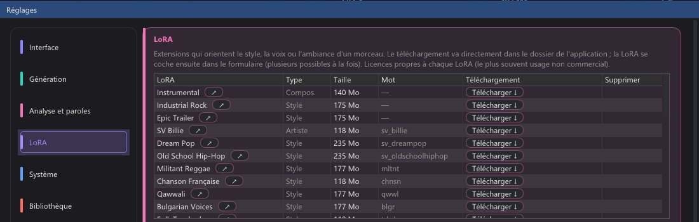
8. La fin des morceaux (durée et fondu)
Un morceau se termine de deux façons :
- Fin naturelle — le modèle conclut tout seul à la fin des paroles (chansons en durée automatique). La fin est celle de la composition ; rien n'est ajouté.
- Plafond de durée atteint — le morceau n'a pas conclu avant la durée maximale (cas de tous les instrumentaux, et de tout morceau à durée fixe). L'application applique alors un fondu de sortie (étiquette orange « Fondu de fin » sur la carte) au lieu d'une coupure sèche.
Régler le fondu
- Réglages › Fin des morceaux — longueur du fondu général, de 1 à 30 s (5 s par défaut, courbe linéaire).
- Case « Fin en fondu sur la structure » (bloc Génération) — pour ce morceau, le fondu dure comme la dernière section de la structure (outro : 20 s en instrumental, 15 s en chanson ; 12 s si la dernière section est un couplet ou un refrain ; entre 5 et 30 s) et suit une courbe en demi-sinus, douce au début comme à la fin. La valeur est mémorisée avec le morceau et reprise par le re-rendu et la recomposition.
9. La file de génération
Les morceaux sont générés un par un (la carte graphique n'en traite qu'un à la fois), dans l'ordre d'ajout. La barre « File de génération » résume : en cours, en attente, en pause, plus les boutons Tout lancer (remet en file tous les morceaux en pause) et Tout en pause (met toute la file en pause et libère la carte ; la génération en cours reprendra depuis le début).
| État | Signification et actions |
|---|---|
| En attente | Dans la file, partira à son tour. « Position n dans la file ». Actions : Pause, Annuler. |
| En pause | Ne partira pas tant qu'on ne le lance pas. Actions : ▶ Lancer, Annuler. |
| En cours | Barre de progression avec l'étape (« Synthèse audio 12/32 »), le temps écoulé et le temps restant estimé. Actions : ⏸ Mettre en pause, Annuler. |
| Terminée | Le morceau est dans la bibliothèque (voir ci-dessous). |
| Interrompue / Annulée / Erreur | Actions : ↻ Relancer (mêmes réglages), Réutiliser, Supprimer. |
Vérification de la mémoire vidéo
Avant d'ajouter un morceau à la file, l'application estime la mémoire vidéo nécessaire (taille du modèle + environ 4 Go de travail + un peu plus pour les morceaux longs) et la compare à la mémoire libre de la carte. Si elle ne suffit pas, la fenêtre « Mémoire vidéo insuffisante » affiche les programmes qui occupent la carte (navigateurs, jeux, logiciels de montage…), du plus gourmand au moins gourmand. Fermez-les puis choisissez Générer quand même, ou Ajouter en pause pour lancer plus tard ; Gestionnaire des tâches l'ouvre directement. Windows ne permet pas de vider de force la mémoire des autres programmes : il faut les fermer. La vérification est ignorée si une génération est déjà en cours.
Temps restant
L'estimation est apprise sur votre historique (vitesse de la carte, longueur des morceaux, solveur et modèle utilisés) et s'affine à chaque génération. Pendant la phase audio, elle suit le rythme réel des pas.
Pause automatique pendant un jeu
Réglages › Jeux : quand une application en plein écran (ou un programme de votre liste) se lance, la file est suspendue (« jeu en cours : file suspendue »), la génération en cours est arrêtée (elle repartira du début) et la file reprend 10 secondes après la fermeture du jeu. La liste des programmes se saisit sous forme de noms de fichiers séparés par des virgules (« cs2.exe, VRising.exe »).
Fermer l'application pendant une génération
Une confirmation « Quitter ? » s'affiche : la génération en cours est interrompue (état « Interrompue », relançable) et les morceaux en file reviennent en pause au prochain démarrage.
Notifications
Avec « Pastilles de notification », une icône dans la zone de notification de la barre des tâches (près de l'horloge) affiche :
- une pastille rouge avec le nombre de morceaux terminés à découvrir ;
- une pastille violette avec le nombre de générations en cours ou en attente.
Application réduite (case « Application réduite : jauges et compteurs à côté de l'horloge » dans Réglages › Interface › Notifications, activée par défaut) : deux icônes de plus apparaissent près de l'horloge tant que la fenêtre est réduite. La première montre trois barres : CPU, GPU et mémoire GPU (de gauche à droite, en dégradé du vert en bas au rouge vif en haut). La seconde montre deux nombres : en haut (violet) les morceaux en attente ou en cours, en bas (vert) les morceaux terminés depuis la réduction. Le survol donne les valeurs exactes. Sous Windows 11, si elles restent cachées derrière la flèche ^, épinglez-les : Paramètres › Personnalisation › Barre des tâches › Autres icônes de la barre d'état système.
Un clic ouvre la fenêtre ; le menu de l'icône propose Ouvrir Studio Audio AI, Tout lancer, Tout en pause et Quitter.
10. La bibliothèque
La partie droite de la fenêtre liste vos morceaux. En haut : le compteur, le Volume du lecteur, Albums… et Ouvrir le dossier (le dossier Audios).
Recherche, filtres et tri
- Recherche — dans le titre, le groupe, l'album, le style et le morceau d'origine.
- Type — Tous, Chansons, Instrumentaux, Reprises, Re-rendus et suites, Non terminés, Validés, Non validés, À problème, Nouveaux (à écouter).
- Durée — moins d'1 min, 1 à 2, 2 à 3, 3 à 4, 4 min et plus.
- Style — liste de toutes les balises de vos morceaux, avec leur nombre.
- Trier — Plus récents, Plus anciens, Titre A→Z, N° de piste, Durée (longs d'abord), Validés d'abord.
- Lecture continue — à la fin d'un morceau, lit le suivant de la liste affichée. Avec le tri « N° de piste » et le filtre « Validés », on écoute un album dans l'ordre.
La file reste toujours visible, quels que soient les filtres.
Les affichages de cartes
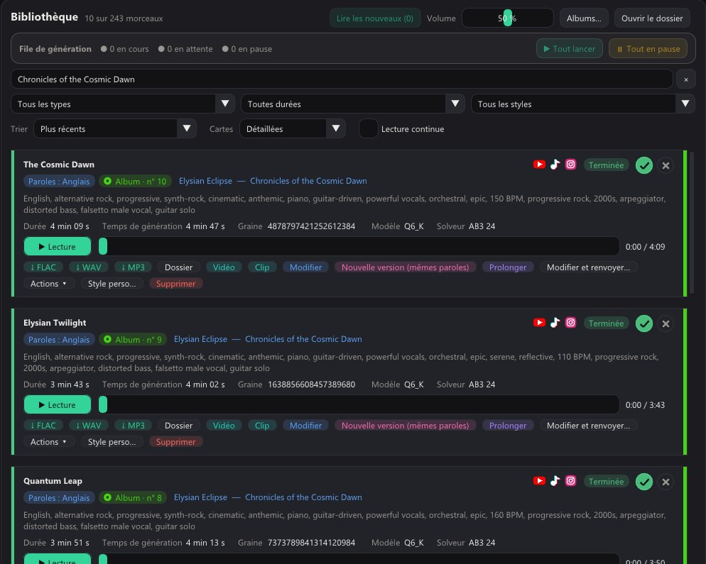
La liste « Cartes » choisit la présentation des morceaux terminés (les morceaux en cours ou en erreur gardent toujours la carte détaillée). Le choix est mémorisé.
| Affichage | Description |
|---|---|
| Détaillées | Titre, pastilles, groupe et album, style, statistiques, lecteur et tous les boutons d'action. |
| Compactes | Une ligne par morceau (lecture, titre, durée, modèle, solveur, LoRA, marques). Un clic sur le titre déplie la carte détaillée ; un nouveau clic sur le titre la replie. |
| Avec pochette | La pochette à gauche, les informations, le lecteur et un menu Actions ▾ regroupant export, vidéo, re-rendu, etc. |
| Pochette compacte | Une ligne par morceau avec une petite pochette ; un clic sur le titre déplie la carte avec pochette, le style complet et toutes les statistiques ; un clic sur le titre la replie. |
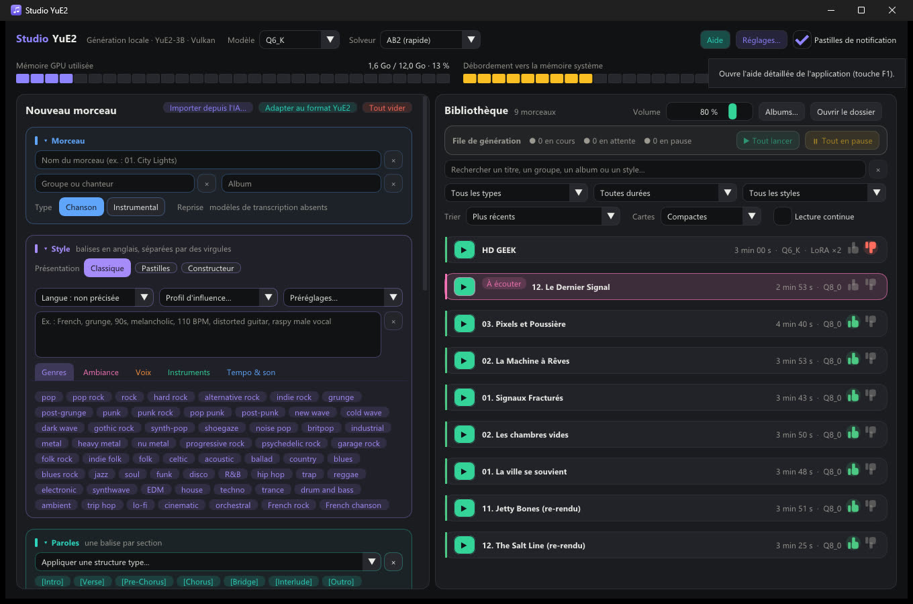
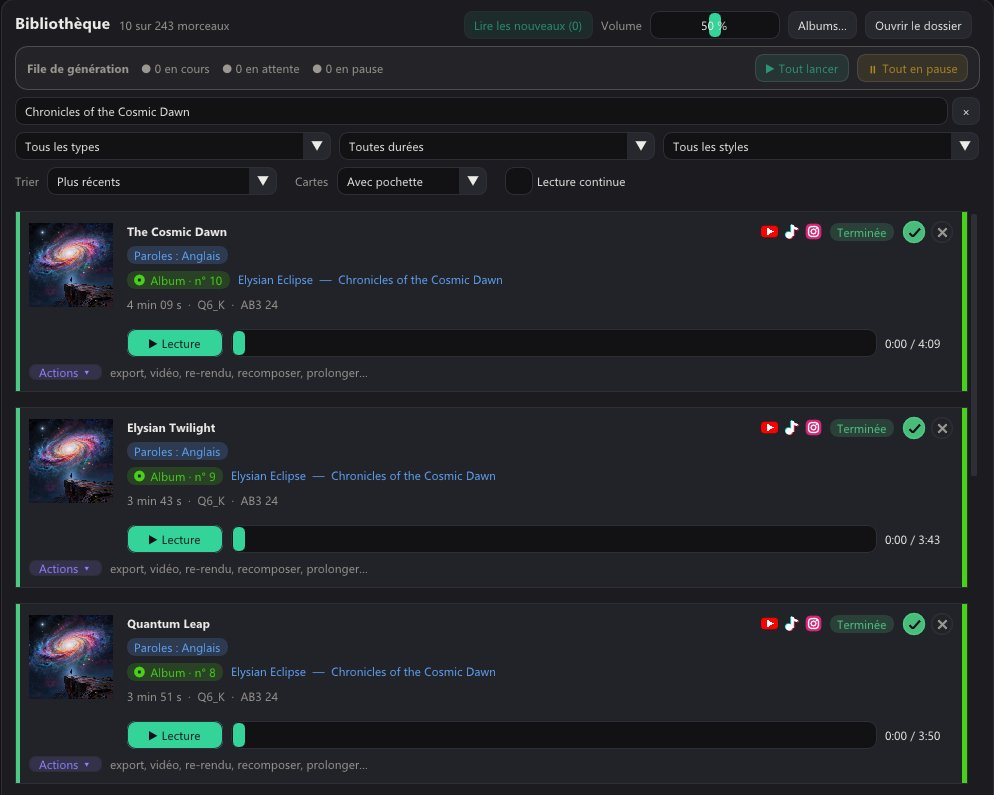
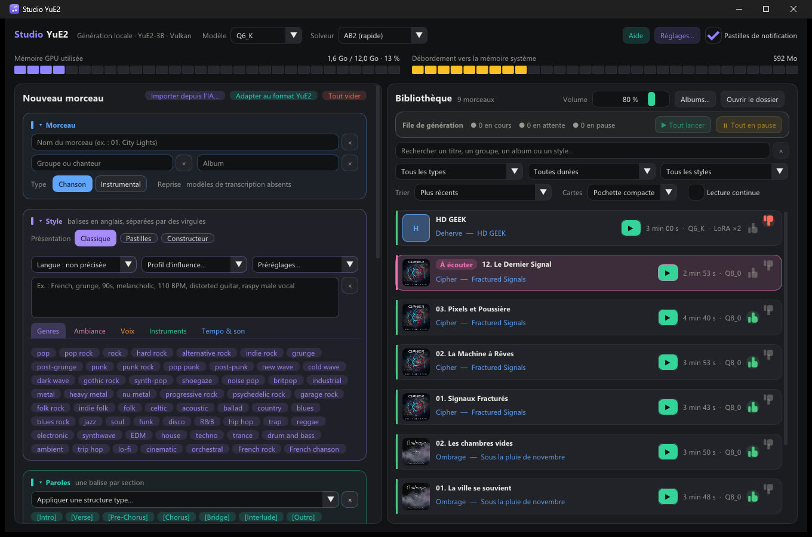
Morceaux d'album (1.0.37) : un morceau qui fait partie d'un album porte un liseré coloré sur le bord droit de sa carte (même couleur pour tout l'album ; les couleurs d'état restent à gauche) et une étiquette avec un petit disque « Album · n° piste ». Le survol de l'étiquette donne le groupe et l'album ; un clic n'affiche plus que cet album (champ de recherche, à vider pour tout revoir).
La langue des paroles
Une pastille « Paroles : Français » (ou Anglais, Espagnol, Italien, Allemand, Portugais, Japonais, Coréen, Mandarin, Cantonais) apparaît sur les morceaux chantés. La langue est déclarée quand le style contient une balise de langue (survol : « déclarée par la balise de langue du style »), sinon détectée d'après le texte des paroles (écriture japonaise, coréenne ou chinoise, ou mots courants des langues latines ; au moins quelques lignes sont nécessaires). Sans pastille : instrumental, ou langue indéterminée. Elle est enregistrée dans la fiche du morceau.
Valider ou signaler un morceau
Chaque morceau terminé porte une marque : validé (vous êtes satisfait), à problème (à analyser, par exemple un grésillement) ou aucune (« à écouter »). Les deux marques s'excluent. Le style des marques se choisit dans Réglages › Marques des morceaux :
| Style | Principe |
|---|---|
| Pouces (par défaut) | Pouce vert = validé, pouce rouge = à problème ; un second clic retire la marque. |
| Coche et croix | Deux cercles : coche verte pleine pour validé, croix rouge pleine pour à problème ; un second clic retire la marque. |
| Commutateur | Trois segments « À écouter / Validé / Problème » ; un clic choisit l'état affiché, « À écouter » retire les marques. |
Le filtre de type propose Validés, Non validés et À problème ; l'export d'album peut se limiter aux morceaux validés.
Les morceaux « neufs » à écouter
Un morceau fraîchement généré, pas encore écouté et ni validé ni signalé, s'affiche en rose (carte teintée, bordure rose, mention « Nouveau — à écouter et vérifier » ou pastille « À écouter ») dans tous les affichages. Il revient à la normale dès que vous le lancez en lecture, ou que vous le validez ou le signalez. Le filtre « Nouveaux (à écouter) » les liste. Les morceaux déjà présents avant cette fonction sont réputés écoutés.
Les actions d'un morceau
| Action | Effet |
|---|---|
| ▶ Lecture | Lecteur intégré avec curseur de position et volume. La lecture utilise le fichier WAV sans perte. |
| ↓ FLAC / ↓ WAV / ↓ MP3 | Enregistre une copie du fichier (boîte « Enregistrer sous »). Le FLAC est en 24 bits, le MP3 en 320 kbit/s ; les deux contiennent titre, groupe, album, piste et style en étiquettes. |
| Dossier | Ouvre le dossier du morceau dans l'Explorateur. |
| Vidéo | Crée les vidéos YouTube / TikTok du morceau (voir Vidéos). |
| Modifier | Titre, groupe ou chanteur, album, numéro de piste et pochette. Les étiquettes des fichiers FLAC et MP3 sont mises à jour sans réencodage. |
| Re-rendu | Garde la composition (mélodie, paroles, structure) et refait seulement la synthèse audio. Le choix : « Garder la même graine » (rendu quasi identique à l'original, sans l'écrêtage des anciennes versions) ou « Prendre une graine aléatoire » (nouvelle variation du timbre et du mixage). Nécessite le fichier audio.json du morceau. |
| Recomposer | Nouvelle composition avec les mêmes style et paroles (nouvelle graine) : la seule façon de corriger une composition défectueuse, qu'un re-rendu ne fait que resynthétiser. |
| Prolonger | Crée un nouveau morceau qui reprend celui-ci et le continue : nom, durée ajoutée (60 s par défaut) et structure de la suite. La durée totale reste limitée à 6 minutes (bouton grisé au-delà de 340 s). |
| Réutiliser | Recharge le style, les paroles, les LoRA et les réglages du morceau dans le formulaire. |
| Supprimer | Après confirmation, envoie le dossier du morceau à la corbeille de Windows : il peut y être restauré (clic droit › Restaurer), sauf si vous videz la corbeille. Impossible tant que le morceau est en file ou en cours. |
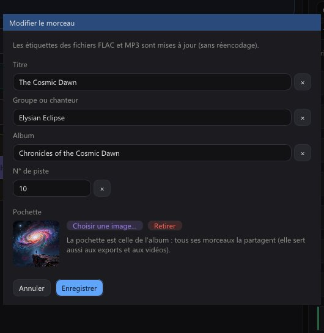
11. Albums, pochettes et exports
« Albums… » ouvre la liste des albums : des morceaux terminés ayant le même groupe et le même titre d'album (renseignés à l'import ou dans « Modifier »). Chaque album tient sur une ligne : vignette, nombre de morceaux, voyants verts des images et des vidéos déjà créées, boutons Exporter, Vidéos…, Compléter… et menu …. La flèche déplie sa fiche, en deux onglets : Pochettes et Vidéos.
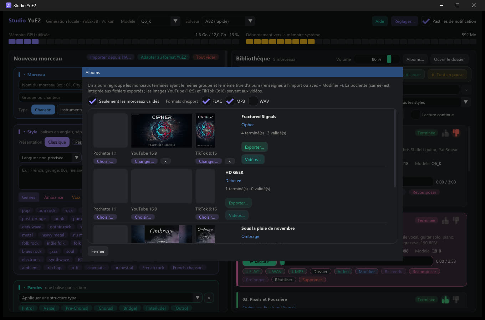
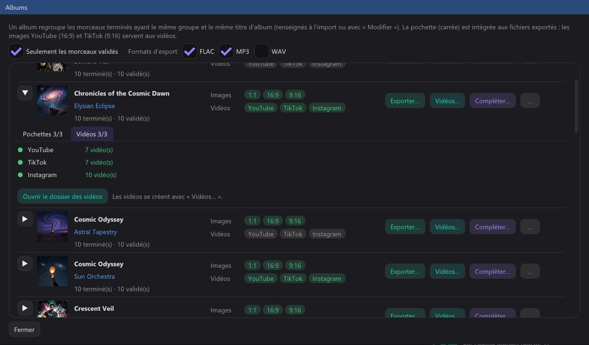
- Trois images par album : Pochette 1:1 (intégrée aux fichiers exportés et affichée dans les cartes), YouTube 16:9 et TikTok 9:16 (servent aux vidéos). Un clic sur une image l'affiche en grand.
- Images créées par l'IA : boutons Générer ou Régénérer ▾ sous chaque image et Toutes les pochettes ▾, à partir de la description modifiable (en anglais, sans texte dans l'image). Le menu propose le réglage par défaut ou un modèle local précis : FLUX.2 klein, Z-Image Turbo, MOSS-Image ou SDXL-Lightning, avec le temps estimé.
- Formats d'export : FLAC, MP3, WAV (cases à cocher), et « Seulement les morceaux validés ».
- Exporter : les fichiers sont écrits dans le sous-dossier
Audiosde l'album, sous la formeNN - Titre.ext, avec les étiquettes (titre, artiste, album, piste n/total) et la pochette intégrée aux FLAC et MP3, pluscover.jpg. - Compléter… : ouvre « Composer avec l'IA » pour ajouter des morceaux à cet album, avec le même groupe, le même son et les pistes à la suite.
- Menu … : Renommer… (groupe ou titre de l'album ; étiquettes, dossiers et images suivent), Ouvrir le dossier de l'album, Rédiger les descriptions (IA locale) (un fichier
description.txtpour le groupe, l'album et chaque morceau, dans la langue de l'interface, sans jamais écraser un fichier existant) et Supprimer l'album… (envoi à la corbeille, avec confirmation). - Vidéos… : crée une vidéo fixe ou un clip par titre de l'album (voir ci-dessous).
12. Vidéos et clips
Le bouton « Vidéo » d'un morceau, ou « Vidéos… » d'un album, ouvre la fenêtre « Créer des vidéos ».
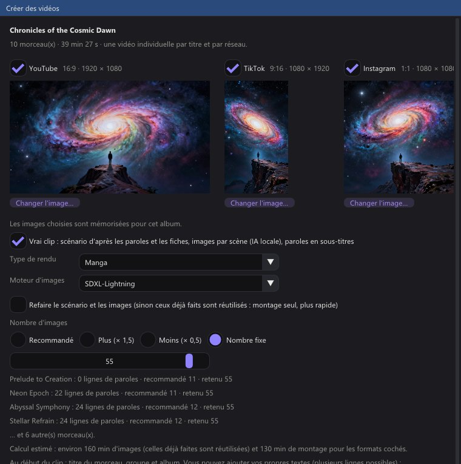
- Vidéo fixe (case « Vrai clip » décochée) : une image avec le son du morceau (AAC 320 kbit/s), créée individuellement par titre, une par réseau coché.
- Vrai clip : l'IA locale écrit un scénario d'après les paroles et les fiches du morceau, le modèle d'images local crée une image par scène, puis le montage ajoute des mouvements de caméra lents, des fondus et les paroles synchronisées en sous-titres (refrains plus grands et orangés). Un instrumental n'a pas de sous-titres. Fichiers
<titre>_<Réseau>_Clip.mp4dans les mêmes dossiers. - Type de rendu (réaliste, BD, comics, manga, anime, aquarelle…) et moteur d'images : FLUX.2 klein, Z-Image Turbo, MOSS-Image ou SDXL-Lightning, à installer dans Réglages › IA › Pochettes.
- Nombre d'images : Recommandé (selon les paroles et la durée), Plus, Moins ou Nombre fixe (jusqu'à 60). La fenêtre affiche le détail par morceau et une estimation du temps.
- Refaire le scénario et les images : sinon ceux déjà créés sont réutilisés (dossier
clip_scenesdu morceau) : seul le montage est refait, c'est bien plus rapide. Les paroles se corrigent dans la ficheparoles.txtdu morceau. - Texte de début et de fin : affichés sur la carte d'ouverture et pendant les 8 dernières secondes. Le texte de fin se place au centre ou en bas (à la place des paroles, pour ne pas cacher le personnage), avec un fond sombre facultatif (bandeau noir semi-transparent, lisible sur une image claire).
- Même graine pour toutes les images d'un clip : chaque scène garde sa description, mais le tirage de départ du modèle d'images est commun : visage, couleurs et cadrage se ressemblent davantage d'une image à l'autre. C'est une aide, pas une garantie. Elle ne touche que les nouvelles images : cochez aussi « Refaire » pour un clip déjà fait.
- Fiches texte (
paroles.txt,fiche.txt,fiche_album.txt,fiche_groupe.txt) : le scénario du clip s'en sert. Pour les anciens morceaux, Actions ▾ › Écrire les fiches texte (ou menu « … » d'un album) les crée tout de suite ; unparoles.txtdéjà présent n'est jamais remplacé. - À lancer au repos : les IA de texte et d'images utilisent la carte graphique.
- YouTube : 16:9, 1920 × 1080, dans
videos\YouTube:YouTube\<titre>_YouTube.mp4. TikTok : 9:16, 1080 × 1920, dansvideos\TikTok:TikTok\<titre>_TikTok.mp4. Instagram (1.0.41) : 1:1, 1080 × 1080, dansIG:IG\<titre>_Instagram.mp4, avec la pochette carrée de l'album. Une image d'un autre format est centrée sur fond noir. - Les vidéos sont rangées dans le dossier
videosde l'album. Les images choisies sont mémorisées pour l'album. - Les titres sont traités l'un après l'autre. Chaque vidéo est écrite sous un nom temporaire (
.part), contrôlée (lecture complète, vraie image non noire) puis renommée : une vidéo ratée est signalée au lieu de rester sur le disque. - Le bouton « Annuler » de la tâche interrompt la création.
13. Les réglages
La fenêtre « Réglages… » regroupe les options de l'application. Elle s'ouvre large (1100 px, ou la largeur de l'écran moins une marge) et se redimensionne en tirant son coin inférieur droit (640 px minimum). Les réglages sont rangés en sept catégories, de couleurs différentes : Interface (langue, thème, marques, notifications), Génération (modèle, fin des morceaux, solveur), Analyse et paroles (analyse audio, transcription Whisper), LoRA, Système (jeux, carte graphique) et Bibliothèque. La liste des catégories est une colonne à gauche ; quand la fenêtre est étroite, elle devient une rangée de boutons en haut. Chaque bloc est un cadre à la couleur de sa catégorie, avec une barre colorée à gauche comme dans le formulaire ; le contenu défile, « Fermer » reste en bas.
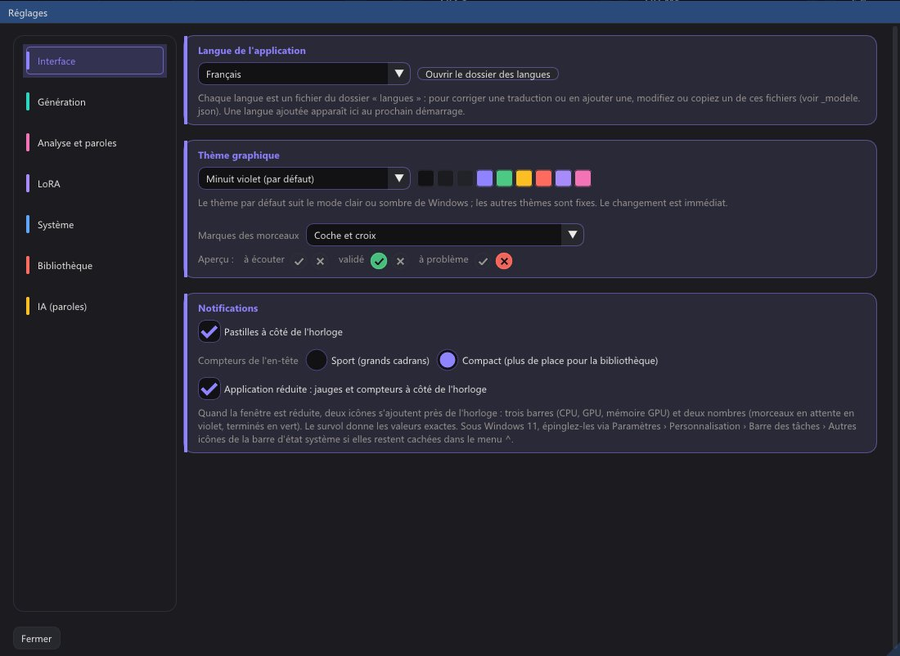
Langue de l'application
Studio Audio AI existe en dix langues : français, anglais, espagnol, italien, allemand, portugais, japonais, coréen, chinois (mandarin, simplifié) et cantonais (traditionnel). Au premier lancement, l'application prend la langue de Windows si elle existe, sinon l'anglais. Le choix se fait en tête des Réglages et s'applique tout de suite (les polices sont reconstruites : Segoe UI pour l'écriture latine, polices Windows pour le japonais, le coréen et le chinois). Les textes que vous écrivez (titres, styles, paroles) et les balises de style (en anglais) ne sont pas traduits. La page d'aide existe en français et en anglais : le bouton « Aide » ouvre celle de la langue choisie (l'anglais pour toutes les langues autres que le français).
Chaque langue est un fichier du dossier langues\ (en.json, ja.json…) : un traducteur peut corriger un texte en éditant son fichier, ou ajouter une langue en copiant _modele.json (une langue ajoutée apparaît au prochain démarrage). Les textes manquants d'une langue s'affichent en anglais, puis en français. Le bouton « Ouvrir le dossier des langues » ouvre ce dossier ; le fichier langues\LISEZMOI.md détaille les règles (marques %d / %s à conserver, sauts de ligne, etc.).
La fenêtre a une largeur minimale (1180 px) pour que les textes les plus longs (allemand, portugais…) ne se chevauchent pas ; quand la place manque, les boutons passent à la ligne suivante.
Thème graphique
Sept thèmes, avec un aperçu de la palette ; le changement est immédiat et mémorisé :
- Minuit violet (par défaut) — sombre violet ; suit le mode clair ou sombre de Windows.
- Studio gris — sombre, neutre, ambre, plus dense (coins presque droits).
- Papier encre — clair chaud, bleu encre, coins très arrondis.
- Menthe clair — clair frais, turquoise.
- Nuit (1.1.002) — sombre sobre : une seule couleur d'action (menthe), les autres couleurs adoucies.
- Console (1.1.002) — graphite chaud façon table de mixage, ambre.
- Clair (1.1.002) — clair sobre pour le plein jour, bleu.
Disposition de l'écran
Sous le thème, Disposition choisit l'agencement de l'écran principal :
- Actuelle (par défaut) — l'écran habituel, inchangé.
- A : rangée (1.1.002) — le bouton « Générer » reste toujours visible en bas du formulaire ; la file de génération se réduit à une ligne quand elle est vide (« Options ▾ » la déplie) ; un lecteur fixe en bas de la fenêtre montre le morceau en cours d'écoute ; les cartes n'ont plus que « ▶ Lecture », « Paroles » et trois menus : Télécharger ▾ (FLAC, WAV, MP3, dossier), Refaire ▾ (nouvelle version, prolonger, modifier et renvoyer, refaire le son, style perso), Vidéos ▾ (vidéo, clip animé), plus Plus ▾ (outils audio, partition, modifier les infos, supprimer).
- B : menu à gauche (1.1.003) — comme A, avec un menu à gauche : Créer (Nouveau morceau, Composer avec l'IA, Partition), Bibliothèque (Morceaux, Albums…, état de la file), Aide et réglages. La page choisie (création ou bibliothèque) occupe toute la largeur ; « Modifier et renvoyer » ou « Utiliser cette partition » ouvrent la page de création. Depuis la 1.1.005, plus de fenêtres par-dessus : Albums est un onglet de la Bibliothèque (à côté de Morceaux), les Réglages s'affichent dans la page de droite (leurs catégories se déplient sous « Réglages » dans le menu), et l'Aide s'affiche dans la page de droite par le navigateur intégré, avec la question à l'IA en haut. Le navigateur de l'aide est fermé dès qu'on quitte la page (environ 220 Mo de mémoire rendus).
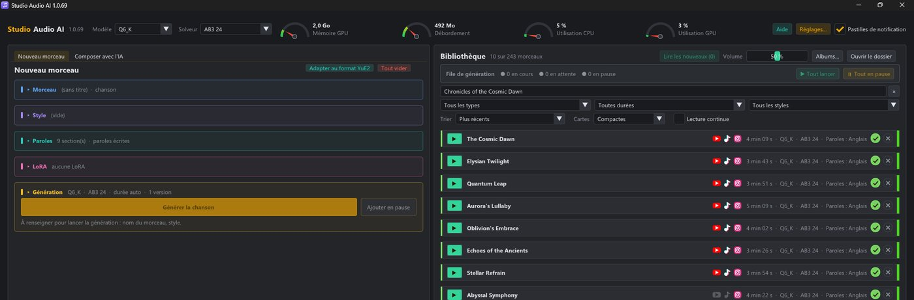
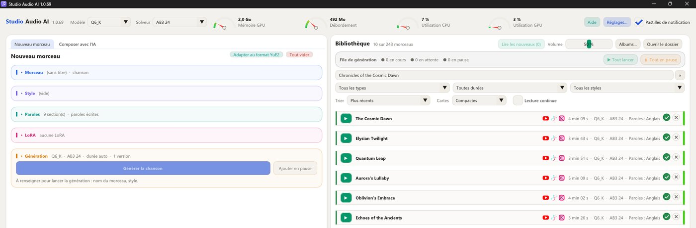
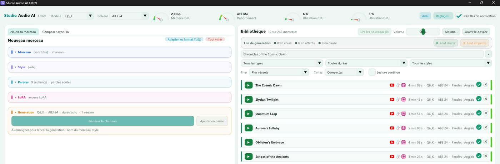
Marques des morceaux
Pouces, Coche et croix ou Commutateur (aperçu des trois états juste dessous). Voir Valider ou signaler un morceau.
Notifications
« Pastilles à côté de l'horloge » : active l'icône de notification (la case existe aussi dans la barre du haut).
Jeux
« Suspendre la file de génération quand un jeu est lancé », et la liste des programmes à surveiller. L'état de la détection est affiché (« Aucun jeu détecté — la file peut tourner » ou « Jeu détecté : … »). Voir Pause automatique.
Modèle de génération
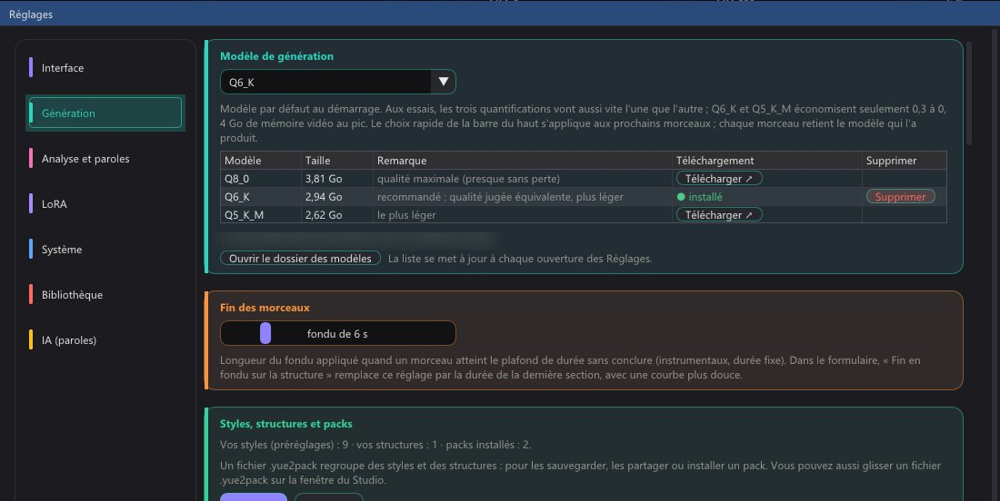
Liste du modèle par défaut au démarrage, et tableau des trois quantifications avec un bouton Télécharger ↗ (ouvre le téléchargement dans le navigateur ; placez ensuite le fichier dans le dossier indiqué par l'infobulle) ou « ● installé ». « Ouvrir le dossier des modèles ». La liste se met à jour à chaque ouverture des Réglages.
Fin des morceaux
Longueur du fondu des morceaux coupés au plafond (1 à 30 s). Voir La fin des morceaux.
Solveur de la phase audio (NAR)
Solveur par défaut au démarrage, avec un tableau des 7 solveurs (évaluations du réseau, vitesse relative, remarque). Voir Performances.
LoRA
Catalogue de 40 LoRA à télécharger, « Ouvrir le dossier des LoRA ». Voir Les LoRA.
Styles, structures et packs (.yue2pack)
Dans Réglages › Génération. Un fichier .yue2pack regroupe des styles (préréglages) et des structures : il sert à les sauvegarder, à les partager ou à installer un pack de styles d'influence.
- Exporter… — cochez les styles et les structures à mettre dans le fichier (« Tout cocher » / « Tout décocher »). Donnez un nom de pack (avec auteur, version et description) pour en faire un pack ; laissez le nom vide pour une simple sauvegarde.
- Importer… — ou glissez un fichier .yue2pack sur la fenêtre du Studio. Les éléments d'un pack sont rangés sous son nom dans les listes (« Rock 80s › Cold wave ») ; ceux d'une simple sauvegarde rejoignent vos styles et structures. Si un élément du même nom existe déjà, le Studio demande : Remplacer, Garder les deux (l'élément importé devient « Nom (2) ») ou Ignorer, avec la case « Faire de même pour les éléments suivants ». Si le pack lui-même est déjà installé, la question porte sur tout le pack : Remplacer le pack (l'ancien est retiré) ou Garder les deux (le nouveau devient « Nom du pack (2) », avec sa propre ligne dans le tableau, supprimable à part). Un style qui utilise une LoRA non installée est importé quand même, et un message la signale.
- Le tableau des packs installés donne leur auteur, leur version et leur contenu ; la description s'affiche au survol du nom ; Supprimer retire tous les styles et structures du pack (il pourra être réimporté depuis son fichier).
Balises rapides « Style à éviter »
Liste des balises proposées sous le champ « Style à éviter » du formulaire (au départ : vocoder, autotune, robotic voice, synthesizer, electronic drums, distorted guitar, choir, spoken word). Un champ Ajouter accepte un ou plusieurs termes séparés par des virgules ; la croix d'une balise la supprime après confirmation ; Rétablir la liste par défaut remet la liste de départ. La liste est enregistrée dans studio_reglages.json (clé negative_tags).
Mises à jour des modèles et des LoRA
Au lancement, l'application compare, en tâche de fond, la taille de chaque modèle principal (Q8_0, Q6_K, Q5_K_M) et de chaque LoRA du catalogue installés avec celle de la dernière version publiée sur Hugging Face (branche principale du dépôt ; les LoRA du catalogue sont figées sur une révision, la mise à jour prend la version la plus récente). Une version différente fait apparaître un bouton orange « Mise à jour ↓ » à côté de « ● installé / installée » dans les tableaux ; une notification résume le nombre de mises à jour. Un clic télécharge le fichier (barre de progression et ✕ pour annuler, reprise possible après une coupure) puis remplace l'ancien fichier. Le bouton est grisé pendant une génération. La détection repose sur la taille du fichier (une mise à jour de même taille exacte n'est pas vue) ; hors ligne, rien ne s'affiche.
Supprimer des modèles et des LoRA
Les tableaux des modèles et des LoRA ont une colonne Supprimer : le bouton apparaît sur chaque ligne installée (y compris les modèles et LoRA déposés à la main). Après confirmation, le fichier est supprimé définitivement du disque (il ne passe pas par la corbeille, car ces fichiers pèsent plusieurs Go) ; modèles et LoRA du catalogue peuvent être téléchargés de nouveau. Les morceaux déjà générés ne sont pas touchés. Le bouton est grisé pendant une génération. Si vous supprimez le modèle utilisé, l'application en choisit un autre (Q6_K de préférence).
Analyse audio
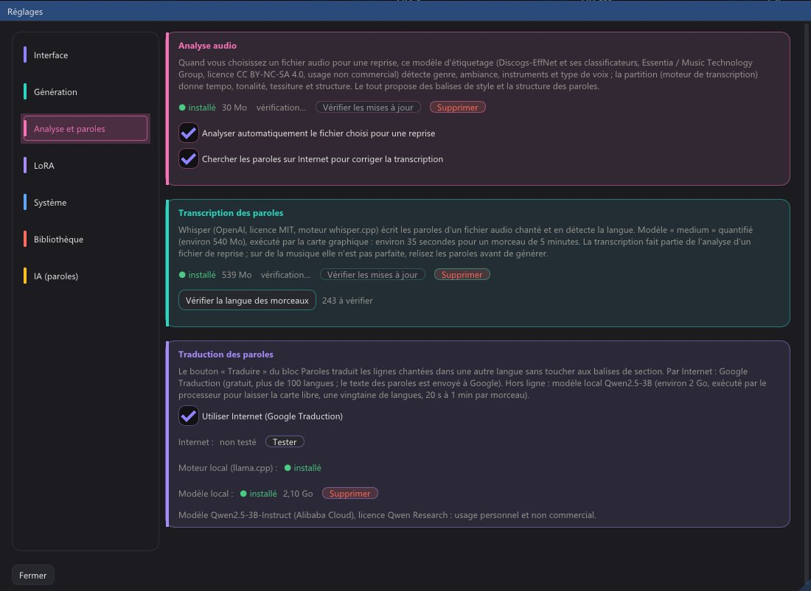
Le modèle d'analyse (environ 30 Mo) est un ensemble de réseaux d'étiquetage Discogs-EffNet et de ses classificateurs (genre, ambiance, instruments, voix, tonalité…) du Music Technology Group (Universitat Pompeu Fabra, projet Essentia), exécutés sur le processeur avec ONNX Runtime ; ils sont publiés sous licence CC BY-NC-SA 4.0 (usage non commercial). Le tempo, la tonalité, la tessiture et la structure viennent de la partition transcrite par le moteur SheetSage2 déjà utilisé pour les reprises. La section propose :
- Télécharger le modèle d'analyse — barre de progression, ✕ pour annuler, reprise possible ; les fichiers vont dans
modeles\analyse\. - ● installé — taille, puis « ● à jour » ou un bouton orange « Mise à jour ↓ » quand un fichier a changé sur le serveur ; Vérifier les mises à jour relance la comparaison (aussi faite au lancement).
- Supprimer — après confirmation, supprime les fichiers du disque (téléchargeables de nouveau).
- Analyser automatiquement le fichier choisi pour une reprise — sinon, un bouton « Analyser le style de ce fichier » apparaît dans le bloc Morceau.
Transcription des paroles
Modèle Whisper « medium » quantifié (OpenAI, licence MIT, environ 540 Mo), exécuté par le moteur whisper\whisper-cli.exe (whisper.cpp, Vulkan : la carte graphique). Même présentation que l'analyse audio : Télécharger le modèle de transcription (fichier dans modeles\voix\), « ● installé », « Mise à jour ↓ » quand le fichier a changé, « Vérifier les mises à jour », Supprimer (confirmation). Indisponible pendant une génération. Pas de séparation de la voix : sur des mixages très chargés, la transcription est moins fidèle.
Vérifier la langue des morceaux. Le bouton « Vérifier la langue des morceaux » (actif quand le modèle est installé et que rien ne tourne) fait écouter à Whisper trois extraits de 30 s de chaque morceau chanté de la bibliothèque (environ 3 s par morceau) pour en déterminer la langue chantée ; il compare avec la langue déclarée ou déduite du texte et corrige la fiche si la différence est nette (au moins deux extraits d'accord, confiance moyenne d'au moins 60 %). Chaque morceau n'est vérifié qu'une fois ; la pastille « Paroles : … » indique alors « vérifiée à l'écoute du morceau ». Le compteur « n à vérifier » montre ce qui reste, « Arrêter » interrompt, et la vérification s'arrête d'elle-même si une génération démarre. Les morceaux marqués instrumentaux sont vérifiés aussi, car des paroles s'y glissent parfois : si Whisper y entend des mots dans une langue reconnue (au moins 10 mots distincts), la carte affiche une pastille ambre « Voix détectée : langue » ; la fiche reste instrumentale. Les balises de langue du style ne sont pas modifiées.
Traduction des paroles
Moteurs du bouton « Traduire » du bloc Paroles. Utiliser Internet (Google Traduction) : activé par défaut ; le texte des paroles est alors envoyé à Google. L'état de la connexion est testé au démarrage (bouton Tester). Moteur local : llama.cpp, dans le dossier traduction à côté de l'application (fourni avec la version portable). Modèle local : Qwen2.5-3B-Instruct (environ 2 Go, licence Qwen Research, usage non commercial), à télécharger ici dans modeles\traduction ; il tourne sur le processeur pour laisser la carte graphique aux générations.
IA (paroles)
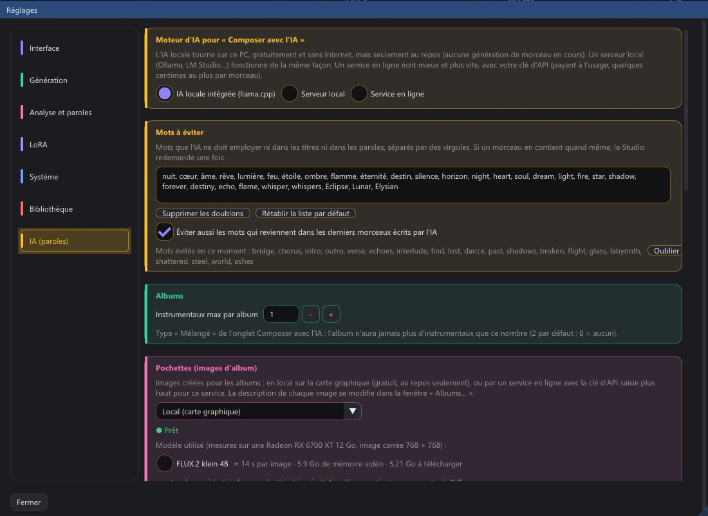
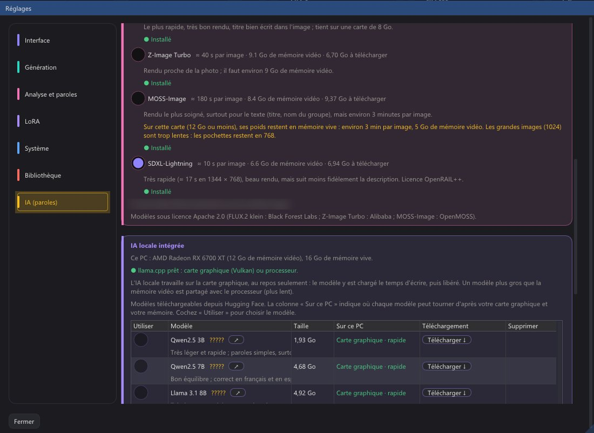
Moteur de l'onglet « Composer avec l'IA ». Trois possibilités :
- IA locale intégrée (llama.cpp) : choisissez un modèle dans le tableau (Qwen, Llama, Gemma, Mistral… de 2 à 14 Go) ; chaque ligne indique sa taille, sa qualité d'écriture et s'il tient sur la carte graphique (rapide), seulement sur le processeur (lent) ou s'il est trop lourd pour ce PC. Le modèle se télécharge depuis Hugging Face dans
modeles\ia. L'IA locale utilise toujours la carte graphique : il faut pour cela télécharger une fois llama.cpp pour la carte graphique (bouton Télécharger llama.cpp pour la carte graphique, environ 37 Mo, dansia\llama; proposé aussi dans l'onglet). Un modèle plus gros que la mémoire vidéo est partagé entre la carte et le processeur (colonne « Carte + processeur »). - Serveur local déjà installé (Ollama, LM Studio, llama-server, KoboldCpp, Jan, GPT4All…) : bouton Détecter, puis Se connecter sur le serveur trouvé et choix du modèle.
- Service en ligne avec une clé d'API : OpenAI, Claude (Anthropic), Gemini, Mistral, OpenRouter, DeepSeek, Groq, xAI, Together, Perplexity, Fireworks, Cerebras, Cohere, Hugging Face, ou tout service « compatible OpenAI » (adresse personnalisée). La clé est enregistrée chiffrée pour votre compte Windows ; boutons Lister les modèles et Essayer. Les paroles demandées sont alors envoyées à ce service.
Supprimer tous les morceaux
Tout en bas des Réglages, la section Bibliothèque propose « Supprimer tous les morceaux… ». Après confirmation, tous les dossiers de la bibliothèque sont envoyés à la corbeille de Windows (restaurables tant qu'elle n'est pas vidée). Les images d'albums (pochettes\) et les vidéos ne sont pas touchées. Indisponible pendant une génération ou tant que la file n'est pas vide.
Carte graphique et test de santé
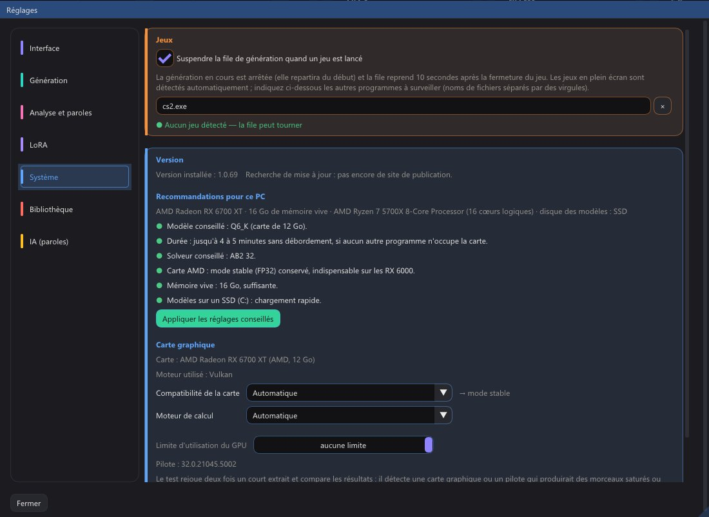
Affiche la version du pilote. Lancer le test de santé (≈ 1 min) rejoue deux fois un court extrait (48 s) et compare les résultats : un écart relatif inférieur à 15 % indique une carte et un pilote stables ; au-delà, la carte produit des résultats instables (morceaux saturés ou parasités). Le test est indisponible pendant une génération. L'application mémorise la version du pilote : si elle change, le bouton Réglages devient orange et un nouveau test est conseillé.
Version et mises à jour. En haut du bloc : la version installée et l'état de la recherche de mise à jour (au démarrage, en tâche de fond ; « Vérifier maintenant » la relance). Tant qu'aucun site de publication n'est choisi, la recherche est désactivée (« pas encore de site de publication »). Sans connexion, elle abandonne en quelques secondes sans rien bloquer.
Recommandations pour ce PC. L'application lit la carte graphique, la mémoire vive, le processeur et le type du disque qui contient les modèles (SSD ou disque dur), puis conseille : la quantification du modèle (Q8_0 à partir de 15 Go de mémoire vidéo, Q6_K à partir de 11 Go, sinon Q5_K_M), le solveur (ab2_32 si la carte a au moins 11 Go, sinon ab3_20, plus léger), et signale les points faibles (moins de 16 Go de RAM, modèles sur un disque dur : chargement lent). Le bouton « Appliquer les réglages conseillés » choisit ce modèle et ce solveur (le modèle doit être téléchargé).
Carte détectée et moteur de calcul. Au démarrage, l'application reconnaît la carte la plus puissante du PC (celle qui a le plus de mémoire vidéo : sur un portable, la carte Nvidia ou AMD plutôt que la puce intégrée) et affiche son nom, sa marque, sa mémoire et le moteur utilisé.
- Compatibilité de la carte : Automatique (mode stable sur AMD et Intel, mode rapide sur Nvidia), Stable (calculs en précision complète FP32 : indispensable sur les cartes AMD RX 6000, à essayer si un morceau grésille ou sature) ou Rapide (demi-précision FP16, plus rapide). Pris en compte dès la génération suivante.
- Moteur de calcul : Automatique (CUDA sur une carte Nvidia si le moteur CUDA est installé, sinon Vulkan), Vulkan (toutes les cartes) ou CUDA (cartes Nvidia). Changer de moteur demande de redémarrer l'application.
- Moteur CUDA (facultatif, cartes Nvidia) : dossier
outils\moteur\cudade l'application (l'ancienmoteur_cudareste reconnu), produit parbuild_yue2cpp_cuda.cmd(CUDA Toolkit nécessaire) et livré à part (StudioAudioAI-moteur-CUDA.zip, à décompresser dans le dossier de l'application). Non testé faute de carte Nvidia. - Sur une carte Nvidia, un bouton Pilotes Nvidia ouvre la page de téléchargement des pilotes.
Limite d'utilisation du GPU (de 30 à 100 %, « aucune limite » par défaut) : le moteur est mis en pause par intervalles très courts (une fraction de chaque cycle de 200 ms) pour laisser souffler la carte : température, bruit, autres programmes. À 90, une génération dure environ 1,1 fois plus longtemps. Pendant la phase audio (pas x/32), c'est le moteur qui marque une pause après chaque pas, proportionnelle à sa durée. Le réglage s'applique immédiatement, même pendant une génération (au pas suivant). Sur le compteur « Utilisation GPU », un repère orange marque la limite ; sur un long morceau, chaque pas dure plusieurs secondes à pleine puissance, suivi d'une pause : la limite s'applique en moyenne, c'est pourquoi la jauge affiche alors « valeur instantanée · moyenne » (moyenne sur 16 s, qui fait foi).
Mise à jour du pilote. Pour une carte AMD, l'application lit la version d'AMD Software : Adrenalin Edition installée (registre Windows) et la compare, au lancement, à la dernière version stable publiée (notes de version AMD relayées sur GitHub, source non officielle ; année et mois comparés). Si une version plus récente existe, un bouton orange « Mise à jour disponible » apparaît à côté de la version du pilote (et une notification est affichée une fois) ; il ouvre la page de téléchargement des pilotes AMD. Hors ligne, rien ne s'affiche. Après une mise à jour, relancez le test de santé.
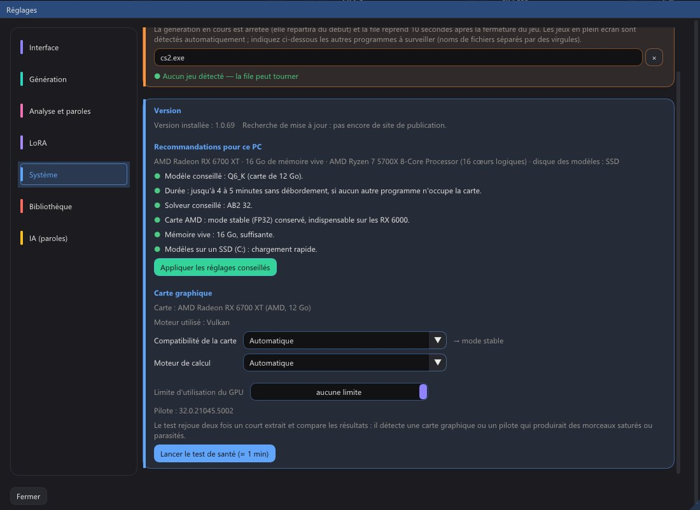
14. Performances et mémoire
Où passe le temps ?
Une génération comporte quatre étapes : (1) partition facultative (15 à 25 s), (2) composition de la mélodie par le modèle de langage (50 à 110 s), (3) phase audio « NAR » en 32 pas — de loin la plus longue — et (4) décodage audio (≈ 5 s). Le coût de la phase NAR croît plus vite que la durée du morceau : un morceau de 6 minutes coûte environ 2,5 fois un morceau de 3 min 30.
Les solveurs de la phase audio
Le solveur « midpoint » évalue le réseau deux fois par pas (64 évaluations). AB2 (Adams-Bashforth d'ordre 2) l'évalue une fois par pas après le premier (33 évaluations). Mesure sur un morceau de 3 minutes, mêmes codes de composition :
| Midpoint | AB2 | |
|---|---|---|
| Phase NAR | 297 s | 153 s (−48 %) |
| Génération complète | 322 s | 178 s (−45 %) |
| Temps / durée du morceau | 1,8× | 1,0× |
Le spectre et le niveau sonore d'AB2 sont identiques à ceux du midpoint ; AB2 32 est le solveur par défaut.
Le nom d'un solveur donne la méthode puis le nombre de pas : MP = midpoint (2 évaluations par pas), AB2 / AB3 = Adams-Bashforth d'ordre 2 / 3 (1 évaluation par pas, en réutilisant les pas précédents), Euler = méthode simple d'ordre 1. Le temps de la phase audio est proportionnel au nombre d'évaluations du réseau. Mesures sur un extrait de 96 s, comparées au midpoint à 64 pas (128 évaluations) pris comme référence :
| Solveur | Évaluations | Vitesse (MP 32 = 1×) | Écart de forme d'onde | Remarque |
|---|---|---|---|---|
| AB3 16 | 17 | 3,8× | 4,1 % | le plus rapide, écart perceptible sur les détails |
| AB3 20 | 21 | 3,0× | 3,1 % | précision proche d'AB2 32, environ 35 % plus rapide |
| AB3 24 | 25 | 2,6× | 1,3 % | précision proche de MP 32, environ 25 % plus rapide qu'AB2 32 |
| Euler 32 | 32 | 2,0× | 13 % | niveau sonore (−0,44 dB) et spectre altérés : à éviter |
| AB2 32 | 33 | 1,9× | 3,4 % | solveur d'origine rapide (défaut) |
| AB3 32 | 33 | 1,9× | 1,25 % | meilleure précision à vitesse d'AB2 32 |
| MP 32 | 64 | 1,0× | 1,1 % | référence, le plus lent |
L'écart de forme d'onde mesure la différence avec la référence ; les écarts de niveau et de crête sont inférieurs à 0,1 dB sauf pour Euler. Seule l'écoute dit si l'écart est audible : comparez sur vos propres paroles, en générant le même morceau avec plusieurs solveurs (même graine). Chaque morceau retient son solveur (visible dans ses statistiques) et les estimations de temps en tiennent compte.
Les quantifications du modèle
Essai à graines et paroles identiques sur un morceau de 3 minutes : Q8_0, Q6_K et Q5_K_M vont aussi vite l'une que l'autre (environ deux fois la durée du morceau en Midpoint). Les quantifications plus légères économisent seulement 0,3 à 0,4 Go de mémoire vidéo au pic, car seuls les poids de la phase NAR sont chargés à ce moment ; l'essentiel de la mémoire vient des tampons d'attention, qui grandissent avec la durée. La qualité a été jugée équivalente à l'écoute ; Q6_K est le défaut.
Mémoire vidéo : ce qui fait ralentir
- Un morceau long mobilise 8,5 à 10 Go. Si d'autres programmes occupent la carte, Windows repousse une partie de la mémoire vers la RAM : les pas deviennent 2 à 8 fois plus lents (voir le compteur « Débordement »).
- Les gros consommateurs observés : un aperçu de fichiers resté ouvert (jusqu'à 6 Go), le gestionnaire de fenêtres de Windows (
dwm) qui peut grossir au fil des heures (de 0,2 à plusieurs Go), les jeux, les navigateurs avec accélération matérielle. - Remèdes : fermer ces programmes avant une longue file ; se déconnecter puis se reconnecter de Windows si
dwmdépasse 2 Go ; raccourcir la durée maximale des morceaux.
15. Subtilités et conseils de qualité
- Composition et synthèse sont deux étapes. « Re-rendu » refait la synthèse (timbre, mixage) avec la même composition ; « Recomposer » refait la composition. Un défaut de composition ne se corrige pas par un re-rendu.
- Graines. Une graine fixe reproduit la composition, mais le calcul sur carte graphique n'est pas exactement reproductible : deux rendus identiques peuvent différer de quelques pour cent en forme d'onde, sans différence audible de niveau ou de timbre.
- Langues. YuE2 est entraîné surtout sur l'anglais. Les autres langues (français, espagnol, italien, allemand, portugais, japonais, coréen, mandarin, cantonais) sont possibles ; la langue choisie est la première balise du style. Les LoRA de chanson française ou de canzone aident.
- BPM. Un tempo dans les paroles (« [Verse | 96 BPM] ») l'emporte sur celui du style.
- Sections. Une chanson demande du texte sous les sections chantées. Évitez de laisser vides [Verse] et [Chorus] ; « Adapter au format YuE2 » recopie les refrains répétés vides.
- Durée automatique d'une chanson : le modèle conclut à la fin des paroles (maximum 6 minutes). En durée fixe, un plafond trop court coupe le morceau avec un fondu.
- Fichiers audio. Le WAV est la sortie brute du moteur (vrai pic à 0 dBFS, sans écrêtage). Les FLAC et MP3 reçoivent 1 dB de marge pour éviter les dépassements au réencodage ou sur certains convertisseurs. La lecture intégrée utilise le WAV.
- Stabilité Vulkan. Le moteur tourne avec les noyaux en précision FP32 (variables
GGML_VK_DISABLE_F16,GGML_VK_DISABLE_INTEGER_DOT_PRODUCTetGGML_VK_DISABLE_MMVQ) et les options--no-fa --clamp-fp16: sur les cartes AMD RDNA2, les noyaux en demi-précision étaient instables et produisaient des grésillements et des saturations. L'application les applique automatiquement. - Profils d'influence. Ils ajoutent au style les balises de son d'un groupe ou d'un genre ; l'effet n'est pas garanti.
- Plusieurs LoRA. Cumulez avec mesure : des forces élevées sur plusieurs LoRA d'une même moitié du modèle peuvent dégrader la composition.
16. Fichiers et dossiers
Tout ce dont le Studio a besoin est dans son dossier : il ne lit et n'écrit rien ailleurs (hormis les fichiers que vous choisissez vous-même, comme un dossier de vidéos ou un fichier à reprendre). Vous pouvez le copier sur un autre disque ou un autre PC.
| Élément | Contenu |
|---|---|
Studio Audio AI.exe, onnxruntime*.dll, msvcp140*.dll, vcruntime140*.dll | L'application et ses bibliothèques (ONNX Runtime exécute le modèle d'analyse audio). |
LISEZMOI.md | Présentation rapide et premier lancement. |
outils\moteur\ | Moteur de synthèse yue2.cpp (Vulkan) : yue-synth.exe, yue-transcribe.exe, ggml*.dll. Moteur CUDA facultatif (cartes Nvidia) dans outils\moteur\cuda\. |
outils\ffmpeg\ | ffmpeg.exe, ffprobe.exe : conversions FLAC/MP3, exports, vidéos, analyse. |
outils\whisper\ | Moteur de transcription des paroles (Whisper). |
outils\llama\ | llama.cpp pour le processeur : traduction des paroles hors ligne. |
outils\llama-vulkan\ | llama.cpp pour la carte graphique, téléchargé depuis l'onglet Composer avec l'IA. |
outils\sd-vulkan\ | stable-diffusion.cpp : création des pochettes et des images de clips. |
ressources\aide\, ressources\langues\ | Cette aide (aide.html en français, aide.en.html en anglais) et les fichiers de traduction de l'interface (un fichier JSON par langue). |
modeles\ | musique\ (modèles de musique), lora\ (LoRA), analyse\, voix\, traduction\, ia\ : modèles téléchargés au premier lancement ou dans les Réglages. |
Audios\<groupe>\<album>\<NN. titre>\ | (1.0.43) Un dossier par groupe (« Sans groupe » s'il n'est pas renseigné), puis par album (avec ses images pochette, pochette_youtube, pochette_tiktok et ses vidéos dans videos\), puis un dossier par morceau, nommé « 01. Titre » (sans album : directement dans le dossier du groupe). Changer le groupe, l'album ou le titre (« Modifier », « Albums… › Renommer… ») déplace le dossier. Chaque morceau : meta.json (fiche), request.json (requête), audio.json (codes pour re-rendu et prolongation), audio.wav, audio.flac, audio.mp3, generation.log. Le livrable contient deux morceaux de démonstration. |
config\ | (1.0.41) Vos fichiers personnels, à sauvegarder : reglages.json (réglages, pochettes choisies…), styles.json (styles, structures et packs), mots_a_eviter.json (mots à éviter de l'IA), cles_api.json (clés des services en ligne, chiffrées par Windows : elles ne fonctionnent que sur ce PC et pour ce compte, à ressaisir sur un autre PC), dernier_album.json (dernier album écrit par l'IA). |
cache\ | (1.0.41) Fichiers jetables : brouillon.json (formulaire en cours), sante\ (test de santé de la carte), temp\ (fichiers temporaires et journaux). |
donnees\ | pochettes\ (images d'albums qui n'ont plus de morceau ; depuis la 1.0.43 les autres sont dans le dossier de leur album) et, après la mise à jour 1.0.41, _ancien_studio_reglages.json (ancien fichier de réglages, gardé par sécurité). |
Audios\…\videos\YouTube\, TikTok\, IG\ | Vidéos YouTube, TikTok et Instagram, dans le dossier de l'album (ou du groupe pour un morceau sans album) ; plus de dossier au choix (1.0.43). |
LICENSES\ | Licences des composants. |
Les versions précédentes rangeaient ces éléments ailleurs (voix\, traduction\, models\, bibliotheque\…) : au premier lancement d'une version récente, ils sont déplacés automatiquement au bon endroit, sans rien écraser (journal : cache\migration.log).
17. Dépannage
| Symptôme | Cause probable et remède |
|---|---|
| « Impossible de trouver le moteur de synthèse » | yue-synth.exe doit être dans le dossier de l'application (ou dans yue2.cpp\build\Release pour une installation de développement). |
| Le téléchargement des modèles s'est arrêté | Relancez l'application : il reprend où il s'était arrêté. |
| Génération très lente | Regardez le compteur « Débordement ». Fermez les programmes qui utilisent la carte ; se déconnecter / reconnecter Windows si dwm est gonflé. |
| Morceaux grésillants ou saturés | Recomposez le morceau ; lancez le test de santé ; vérifiez le pilote graphique (le bouton Réglages orange signale un changement). |
| Le morceau finit brusquement | Plafond de durée atteint : augmentez la durée, ou allongez le fondu / cochez « Fin en fondu sur la structure ». |
| Le bouton Générer est grisé | Renseignez le nom, le style et (pour une chanson) les paroles. |
| « Re-rendu » ou « Prolonger » grisé | Le fichier audio.json du morceau est absent, ou le morceau atteint déjà 6 minutes. |
| Une LoRA du préréglage « non installée » | Téléchargez-la dans Réglages › LoRA. |
| La carte « Reprise » est grisée | Les modèles SheetSage2 et MERT sont absents de modeles\musique. |
| Aucune pochette dans les cartes | Choisissez une image dans « Modifier » ou « Albums… » ; sans image carrée, l'image YouTube ou TikTok de l'album est utilisée. |
| La page d'aide ne s'ouvre pas | Le dossier aide doit être à côté de l'application ; la page s'ouvre dans votre navigateur par défaut. |
18. Licences et crédits
- Studio Audio AI : application native en C++20 (Win32, Direct3D 11, Dear ImGui, yyjson).
- Moteur : yue2.cpp (licence MIT), avec des correctifs locaux ; solveurs AB2 et AB3 d'après la proposition de Riff, reprise dans le fork de timoncool (MIT).
- Modèles : YuE2 (m-a-p) et conversions GGUF de Serveurperso — licence CC BY-NC 4.0, usage non commercial.
- LoRA : chacune appartient à son auteur (Mothersuperior, becausereasons, atomtanstudio, monsterovich, HaileyStorm, ntc-ai, pduncan, storagejuju, akbargherbal, supermind, goldhub…) ; licence propre, le plus souvent non commerciale.
- FFmpeg (version « full » de gyan.dev, GPL v3) — ffmpeg.org.
- Idées de fonctionnalités inspirées du projet YuE2-Studio (MIT).
19. Journal des évolutions
Cette aide est mise à jour à chaque ajout ou modification de fonctionnalité.
| Date | Évolution |
|---|---|
| 7 nov. 2026 (1.1.005) | Disposition B : Albums en onglet de la Bibliothèque, Réglages et Aide dans la page de droite (aide affichée par le navigateur intégré, sans quitter le Studio). |
| 7 nov. 2026 (1.1.004) | Changement de thème dans les Réglages : les fonds restés sombres après le passage à un thème clair (panneaux, menu de gauche) prennent bien les nouvelles couleurs. |
| 7 nov. 2026 (1.1.003) | Disposition B : menu à gauche (Réglages › Interface). Thèmes clairs (Papier encre, Menthe clair, Clair) : la barre de titre des fenêtres (Réglages, Albums…) et les en-têtes des tableaux ne restent plus sombres, leurs textes redeviennent lisibles. |
| 7 nov. 2026 (1.1.002) | Réglages › Interface : trois nouveaux thèmes (Nuit, Console, Clair) et le choix de la disposition : « Actuelle » ou « A : rangée » (bouton Générer toujours visible, file repliée quand elle est vide, lecteur fixe en bas, cartes avec 4 boutons et 3 menus). |
| 6 nov. 2026 (1.1.001) | Nouvelle numérotation des versions : 1.1.001 suit la 1.0.100 (le dernier nombre va de 001 à 100, puis le deuxième augmente). Ménage interne sans changement visible : les petites fonctions de texte et de fichier, recopiées jusqu'à 6 fois dans le programme, n'existent plus qu'en un seul exemplaire. |
| 6 nov. 2026 (1.0.100) | Jeton carte graphique : un seul gros travail à la fois sur la carte (génération de musique, IA de texte locale, images locales des pochettes et des clips). Les autres attendent leur tour au lieu de se partager la mémoire vidéo ; un morceau en file affiche alors « En attente de la carte graphique (IA de texte locale) » et démarre tout seul quand elle se libère. Mettre le morceau en pause arrête l'attente. |
| 6 nov. 2026 (1.0.99) | Fiabilité, sans changement visible : les programmes lancés par le Studio (moteur, ffmpeg, Whisper, IA de texte, images) passent par un lanceur unique. Ils s'arrêtent avec le Studio, même après un plantage (plus d'IA ou de serveur d'images resté en mémoire) ; l'IA de texte et le serveur d'images prennent un port libre (deux Studios ou deux IA ne se gênent plus) ; les réglages FP32 du moteur de musique ne peuvent plus manquer quand une IA démarre au même moment ; une tâche ne peut plus rester bloquée « en cours » parce qu'un autre programme a démarré au même instant. |
| 6 nov. 2026 (1.0.98) | Atelier clip : texte de fin au centre ou en bas, avec fond sombre facultatif ; case Même graine pour toutes les images d'un clip (personnage et décor plus réguliers, sans garantie) ; Écrire les fiches texte dans Actions ▾ d'un morceau et le menu « … » d'un album, pour les morceaux faits avant les fiches. |
| 6 nov. 2026 (1.0.97) | Outils audio : Actions ▾ d'un morceau (et menu « … » d'un album) : Masteriser (volume normalisé −14 / −11 / −16 LUFS, crête limitée, fichiers dans le dossier « master »), Paroles synchronisées (paroles.lrc et paroles.srt calés par Whisper), Séparer les pistes (voix, batterie, basse, autres : moteur demucs.cpp fourni ; son modèle (84 Mo) se télécharge au clic, environ 4 à 5 fois la durée du morceau), Exporter pour un logiciel de musique (audio, partition ABC, paroles, stems, tempo et tonalité dans le nom), Fiche de publication (titre, description et hashtags par l'IA locale, boutons YouTube Studio / TikTok), Livret PDF de l'album. Albums… : Doublons… (compositions ou paroles presque identiques). Plusieurs versions d'un même envoi : la meilleure est désignée à la fin. File de génération : « Quand la file est terminée » (rien, veille, extinction après 60 s) et rapport « rapport_nuit.txt ». Nouveau : le champ de recherche cherche aussi dans les paroles. Autres ajouts : Contrôle tonalité et tempo (SheetSage2 réécoute le morceau et compare à la partition ou au BPM ; pouce rouge si dérive ; en option après chaque file), Espace disque et ménage (Réglages › Système : tailles et envoi à la Corbeille sur confirmation), Mise à jour en un clic (téléchargement de la release GitHub, empreinte SHA-256 vérifiée, sauvegarde, réglages/morceaux/modèles/LoRA gardés, relance), bouton Question… (l'IA locale répond d'après l'aide intégrée) et Karaoké dans « Créer des vidéos » (paroles défilantes lues dans paroles.lrc). Ajouts du 6/11 : Partition de tous les instruments (stems) (Actions › : SheetSage2 transcrit la voix, la basse et les autres instruments séparés, affichés sur des portées distinctes dans l'Atelier partition, toutes modifiables ; batterie ignorée ; alignement indicatif) ; libellés « de ce morceau / de l'album » pour le contrôle tonalité et tempo ; correction du zoom de l'Atelier avec les silences de plusieurs mesures. Instruments par portée et banques de sons dans l'Atelier partition : choisissez l'instrument de chaque portée (basse, guitare, voix, cordes, cuivres…) ; Réglages › Système › « Sons de l'Atelier partition » télécharge à votre clic les instruments (échantillons FluidR3 GM, ≈ 2,5 Mo chacun) et des banques SoundFont (GeneralUser GS 31 Mo, FluidR3 GM 142 Mo) ; « Écouter (banque SoundFont) » joue la partition avec la banque (moteur TinySoundFont intégré) et « Exporter en audio… » écrit un fichier WAV. |
| 6 nov. 2026 (1.0.96) | Recherche : le champ de la Bibliothèque cherche aussi dans les paroles et les structures des morceaux. |
| 6 nov. 2026 (1.0.95) | Bibliothèque : bouton « Paroles » sur chaque morceau (cartes détaillée, compacte et avec pochette) : une fenêtre affiche la structure (sections entre crochets) et les paroles, texte sélectionnable et copiable (Ctrl+C, clic droit : « Copier la sélection » / « Copier tout »), avec les boutons « Copier les paroles », « Copier la structure » et « Tout copier ». Morceau instrumental : structure seule ; morceau long : paroles de toutes les parties. |
| 5 nov. 2026 (1.0.94) | Atelier partition, édition : cliquez sur une note, puis ▲ ▼ (flèches du clavier ; Maj + flèche = octave), ♯ ♭ ♮, durée de la ronde à la double croche, note pointée, silence, dupliquer, supprimer, accord au-dessus de la note ; flèches gauche/droite pour passer d’une note à l’autre ; Annuler / Rétablir (Ctrl+Z / Ctrl+Y) ; mesures de durée incorrecte signalées ; « Paroles… » place les paroles sous la mélodie chantée, une syllabe par note (aussi dans l’export MusicXML) ; « Texte ABC » pour modifier la partition en texte avec redessin immédiat. |
| 5 nov. 2026 (1.0.93) | Atelier partition, import : « Importer… » ouvre un fichier MusicXML (.musicxml, .xml, .mxl), MIDI (.mid) ou ABC ; la partition est mise au format du moteur (voix chantée et instrument ; MIDI : rythmes arrondis à la double croche, tonalité et accords estimés) puis « Utiliser dans le Studio » la place dans l’onglet « Partition ». Onglet « Partition » : « Importer MusicXML ou MIDI (Atelier partition)… ». Essai : « L’Hymne à la joie » importé en MIDI, chanson générée avec, 97 % des notes de la mélodie retrouvées dans le chant (Ré majeur, 99 BPM). |
| 5 nov. 2026 (1.0.92) | Atelier partition, exports : boutons MIDI…, MusicXML… et ABC… (le Studio demande où enregistrer). Le MusicXML garde notes, durées, mesures, silences, liaisons, triolets et symboles d’accords ; il s’ouvre dans MuseScore, Finale, Sibelius ou Dorico. Contrôle aller-retour ABC → MusicXML → ABC sur 10 partitions : 100 % des notes et des accords identiques. |
| 5 nov. 2026 (1.0.91) | Atelier partition : « Voir en notes… » (fenêtre « Voir la partition… » et onglet « Partition ») ouvre une fenêtre du Studio qui affiche la partition en vraies notes (bibliothèque abcjs, dans le moteur WebView2 fourni avec Windows) : voix chantée et instrument (clé de fa automatique pour l'instrument grave), accords, titre, tonalité, tempo ; écoute au piano sans internet avec la note jouée en couleur, zoom, impression et export PDF au format A4. |
| 5 nov. 2026 (1.0.90) | Morceaux longs cohérents : quand la partie 1 a une partition, les parties 2 et 3 gardent sa tonalité et son tempo. La partition de chaque suite est préparée d'après ses paroles, transposée dans la tonalité de la partie précédente et réglée sur son tempo, puis le moteur continue le morceau en la suivant (≈ 20 à 60 s de plus par partie). Essai sur 3 parties : la même tonalité (Ré dièse mineur) entendue dans chaque partie, tempo 126 à 128. |
| 5 nov. 2026 (1.0.89) | Partition reconnue : dans l'onglet « Partition », « Reconnaître la partition d'un fichier audio… » fait écouter un morceau par SheetSage2 (≈ 1 min pour 3 min de musique) ; sa partition (tonalité, tempo, sections, accords, mélodie) arrive dans l'onglet, où on la transpose ou la retouche, puis on génère avec ses propres paroles et son style : comme une reprise, mais la partition est visible et modifiable. Aussi : « Ouvrir une partition (.abc)… », et Actions › « Reconnaître sa partition… » pour un morceau de la bibliothèque qui n'en a pas. |
| 5 nov. 2026 (1.0.88) | Onglet « Partition » (à côté de « Nouveau morceau » et « Composer avec l'IA ») : « Préparer la partition » fait écrire au modèle la partition seule (≈ 1 min) d'après le titre, le style et les paroles de « Nouveau morceau » ; on la vérifie (tonalité, tempo, mesure, accords par section), on la transpose (± 1 demi-ton, notes et accords), on change son tempo (le « BPM » du style suit) ou son texte, puis « Générer avec cette partition ». Actions › « Utiliser cette partition… » reprend un morceau et sa partition pour le rejouer, le transposer ou le refaire dans un autre style. |
| 5 nov. 2026 (1.0.87) | Partition : le mode de composition « Complet (mélodie + accords) » devient le mode par défaut d'un nouveau morceau (≈ 28 % de temps en plus ; tonalité, tempo et accords suivis). La partition écrite par le modèle est gardée dans le dossier du morceau (score.abc). La carte détaillée affiche sa tonalité et son tempo ; Actions › « Voir la partition… » montre la tonalité, le tempo, la mesure, les accords de chaque section et le texte complet. « Sans partition (plus rapide) » et « Mélodie seule » restent au choix. |
| 5 nov. 2026 (1.0.86) | Le code source de Studio Audio AI est publié sous licence MIT (fichier LICENSE du dépôt, copié dans le dossier LICENSES du programme) ; les licences des modèles ne changent pas. Les propriétés de l'exe n'affichent plus de nom d'éditeur. |
| 5 nov. 2026 (1.0.85) | Profils d'influence : ils ne contiennent plus aucun nom de chanteur ni de musicien réel, seulement le son du groupe ou du genre (genres, époque, instruments, type de voix). Un album IA sans nom de groupe s'appelle « Studio Audio AI » (plus jamais « <influence> Tribute »). |
| 5 nov. 2026 (1.0.84) | Réglages › Système : carte « Licences des modèles ». La commercialisation des morceaux, pochettes et vidéos est soumise aux licences des modèles utilisés : YuE2, MERT-v2 et SheetSage2 en CC BY-NC 4.0 (non commercial), Essentia en CC BY-NC-SA 4.0 (non commercial), Whisper en MIT, FLUX.2 klein, Z-Image Turbo et MOSS-Image en Apache 2.0, SDXL-Lightning en CreativeML OpenRAIL++-M, IA de texte selon le modèle (Apache 2.0, Qwen Research non commercial, Llama 3.1, Gemma), LoRA selon chacune. La fenêtre Réglages se recentre aussi quand la fenêtre du Studio change de taille. |
| 5 nov. 2026 (1.0.83) | Contrôle qualité sans réécoute : dans Albums…, « Contrôle qualité (bibliothèque) » et, dans le menu « … » d'un album, « Contrôle qualité de l'album ». Pour chaque morceau : durée loin de la cible, paroles peu reconnues ou fin du texte non chantée (Whisper), silence de 5 s ou plus, dernière partie d'un morceau long trop courte. Les morceaux à refaire reçoivent un pouce rouge (sauf ceux que vous avez validés) ; le détail est dans « controle_qualite.txt » (dossier de l'album, ou dossier Audios pour toute la bibliothèque). |
| 5 nov. 2026 (1.0.82) | Shorts en série : dans Albums…, le bouton « Shorts manquants (bibliothèque)… » et, dans le menu « … » d'un album, « Shorts manquants de l'album… » créent un Short pour chaque morceau terminé qui n'en a pas encore, dans la même file que les clips. Chaque Short est rangé dans « videos\Shorts » de son album ; les images d'un clip déjà fait sont reprises ; une fenêtre indique d'abord le nombre de morceaux concernés. |
| 5 nov. 2026 (1.0.81) | Sauvegarde automatique, une fois par jour au lancement, dans le dossier « sauvegardes » du programme : réglages, styles, mots à éviter, liste des modèles et des LoRA, fiche de chaque morceau (15 jours gardés). Au démarrage, un modèle ou une LoRA disparu depuis la dernière sauvegarde, ou une LoRA de vos styles absente, est signalé dans une fenêtre et dans Réglages › Système. |
| 4 nov. 2026 (1.0.80) | Albums… : bouton « Refaire les pochettes » au bout de la ligne « Images » quand les 3 images existent (pochette 1:1, YouTube 16:9, TikTok 9:16 recréées après confirmation « Tout remplacer »). |
| 4 nov. 2026 (1.0.79) | Albums… : voyant « Shorts » à côté de YouTube, TikTok et Instagram (onglet « Vidéos n/4 ») ; le bouton « Pochettes » se place au bout de la ligne « Images ». |
| 4 nov. 2026 (1.0.78) | Albums… : bouton « Pochettes » quand une image manque (crée seulement les manquantes) ; Créer des vidéos : bouton « Générer » sous une image absente ; Composer avec l'IA : bouton « Vider les champs » ; bibliothèque : 4e logo pour les Shorts ; le nombre de morceaux ne chevauche plus « Lire les nouveaux » (il passe dans la bulle du titre si la place manque). |
| 3 nov. 2026 (1.0.77) | Mises à jour : à chaque lancement, le Studio regarde la dernière version publiée sur GitHub ; si elle est plus récente, une pastille « Mettre à jour (x.y.z) » apparaît à côté du numéro de version et ouvre sa page de téléchargement. Hors connexion, rien ne s'affiche. |
| 3 nov. 2026 (1.0.76) | Fenêtre « Créer des vidéos » aussi large que le Studio : formats, images et fichiers créés à gauche, réglages du clip et du Short à droite (une seule colonne si la fenêtre est étroite). |
| 3 nov. 2026 (1.0.75) | Short : durée au choix à côté de la case (15, 30, 45, 60 ou 90 s), 30 s par défaut, la durée conseillée pour faire découvrir un titre ; choix mémorisé. |
| 3 nov. 2026 (1.0.74) | Créer des vidéos › Vrai clip : case « Short 30 s » : un extrait vertical 9:16 de 30 secondes par morceau, qui commence 2 s avant le refrain, avec les images et les paroles du clip et un fondu du son (dossier « Shorts » de l'album, un fichier pour YouTube Shorts et TikTok). |
| 3 nov. 2026 (1.0.73) | Composer avec l'IA : paroles plus variées. Une ligne de couplet ou de pont recopiée (dans le morceau ou dans un morceau précédent de l'album) est retirée et réécrite ; les refrains repris gardent leurs deux premières lignes et changent les autres. |
| 2 nov. 2026 (1.0.72) | Z-Image Turbo bien plus rapide : environ 33 s par image en 1344 × 768 dans un clip, avec un rendu presque identique (nouvelle version du modèle de 3,4 Go à télécharger si vous l'utilisiez). |
| 2 nov. 2026 (1.0.71) | Morceau « Très longue » : la suite des paroles est plus fiable (plus de 110 lignes à chaque essai). |
| 2 nov. 2026 (1.0.70) | Album mélangé : 0 instrumental veut maintenant dire aucun. Morceau « Très longue » : 3 parties, paroles complétées par l'IA jusqu'à environ 110 lignes, et une partie conclue trop tôt par le moteur est refaite automatiquement. |
| 31 oct. 2026 (1.0.69) | Aide relue et mise à jour (albums, clips, compteurs, dossiers), 26 nouvelles captures d'écran en français et en anglais. |
| 31 oct. 2026 (1.0.68) | En-tête : le texte « Génération locale · YuE2-3B · Vulkan » est retiré pour laisser plus de place aux compteurs. |
| 31 oct. 2026 (1.0.67) | Compteurs à aiguille dans l'en-tête à la place des quatre barres, en style Sport ou Compact au choix (Réglages › Système). |
| 31 oct. 2026 (1.0.66) | L'en-tête de la fenêtre affiche le nouveau nom, Studio Audio AI. |
| 31 oct. 2026 (1.0.65) | Système de licence retiré : plus d'essai de 3 jours, plus de code à saisir, plus de version limitée. Toutes les fonctions sont ouvertes pour tous, et le générateur de licences n'est plus livré. |
| 31 oct. 2026 (1.0.64) | Clips : une réponse incomplète de l'IA locale ne fait plus retomber le clip sur la pochette seule ; une partie du scénario illisible est sautée, les autres scènes se partagent ses images. |
| 31 oct. 2026 (1.0.63) | Bibliothèque : une vidéo fixe allume aussi le logo de sa plateforme, en couleur atténuée ; la couleur pleine reste réservée aux clips. |
| 31 oct. 2026 (1.0.62) | Bibliothèque : un logo YouTube, TikTok et Instagram sur la ligne de titre de chaque morceau, plié ou déplié ; gris tant que le clip n'existe pas, en couleur quand il est créé. |
| 31 oct. 2026 (1.0.61) | Clips : les scénarios de tous les morceaux sont écrits d'abord, puis le modèle d'images reste chargé d'un morceau à l'autre : ≈ 9 s par image SDXL-Lightning au lieu de 13 s, et ≈ 3 min par clip de 3 min 20 en un format. |
| 31 oct. 2026 (1.0.60) | Clips : plans de caméra revus, le haut de l'image reste visible et les têtes ne sont plus coupées ; zooms plus doux. |
| 31 oct. 2026 (1.0.59) | Clips : montage plus de 2 fois plus rapide (11 min → 5 min pour un clip en 3 formats), pour un rendu identique. |
| 31 oct. 2026 (1.0.58) | Nouveau modèle d'images local SDXL-Lightning (6,5 Go à télécharger, ≈ 17 s par image en 1344 × 768, licence OpenRAIL++) : le plus rapide, mais il suit moins fidèlement la description. FLUX.2 klein garde ses poids en mémoire vive sur les cartes de 12 Go ou moins : en 1344 × 768, une image passe de 81 s à 27 s. Clips : les paroles ne sont calées qu'une fois par morceau, quel que soit le nombre de formats. |
| 30 oct. 2026 (1.0.57) | Albums… › « … » › Rédiger les descriptions (IA locale) : un fichier « description.txt » pour le groupe, l'album et chaque morceau, dans la langue de l'interface ; un fichier déjà présent n'est jamais remplacé, vous pouvez le corriger à la main. Les noms d'artistes réels cités dans les styles ne sont pas transmis à l'IA, et un texte qui en contiendrait n'est pas écrit. Fenêtre « Créer des vidéos » : noms de fichiers « _Clip » exacts, estimation du temps d'images et de montage, champs alignés. |
| 30 oct. 2026 (1.0.52 à 1.0.56) | Atelier clip : vrais clips animés d'après les paroles. Dans « Créer des vidéos » (ou bouton Clip sur la carte d'un morceau, « Clip animé… » au clic droit pour un morceau seul), cochez « Vrai clip ». Le Studio cale les paroles sur le son (Whisper), l'IA locale de texte raconte l'histoire de la chanson d'après les paroles et les fiches du morceau, de l'album et du groupe, puis le modèle d'images local (FLUX.2 klein par défaut) fait une image par scène ; le montage (zooms lents, fondus, paroles en sous-titres) est fait par ffmpeg. Réglages dans la fenêtre : type de rendu (réaliste, BD, comics, manga, animation, aquarelle, huile, néon, noir et blanc, 3D, rétro), moteur d'images, nombre d'images (recommandé par morceau d'après les lignes de paroles, ou plus, moins, ou fixe jusqu'à 60), textes de début et de fin (« Rock Ballads Fr », « Abonnez-vous »…) ; le titre, le groupe et l'album s'affichent au début. Les clips vont dans les dossiers YouTube / TikTok / IG de l'album (suffixe « _Clip »). Morceaux longs en 2 parties : le clip suit les deux parties. Fiches texte : « paroles.txt » (corrigeable : le clip s'en sert), « fiche.txt », « fiche_album.txt » et « fiche_groupe.txt » écrites à la fin de chaque morceau. La barre de progression indique « Vidéo i / N ». Scénario et images gardés dans le dossier « clip_scenes » du morceau (réutilisés ; case « Refaire » pour recommencer). Réservé aux licences complètes ; à lancer au repos (carte graphique libre). Traductions complétées (9 langues). |
| 29 oct. 2026 (1.0.51) | Fenêtre « Albums » réorganisée : une ligne compacte par album (pochette, voyants verts ou gris des 3 images 1:1 / 16:9 / 9:16 et des 3 vidéos YouTube / TikTok / Instagram, boutons Exporter, Vidéos, Compléter et « … » pour Renommer, Ouvrir le dossier et Supprimer). Un clic sur la flèche ou la pochette déplie la fiche à deux onglets : Pochettes (les 3 images et la description, plus haute, modifiable et coupée en lignes) et Vidéos (état de chaque format, dossier des vidéos). « Générer / Régénérer ▾ » et « Toutes les pochettes ▾ » ouvrent un menu pour choisir le modèle d'images de cette fois-ci (FLUX.2 klein, Z-Image, MOSS-Image ou le réglage par défaut) ; le réglage par défaut ne change pas. |
| 28 oct. 2026 (1.0.50) | Pochettes en local : trois modèles au choix dans Réglages › IA › Pochettes, chacun téléchargé seulement si vous cliquez : FLUX.2 klein 4B (par défaut : ≈ 14 s par image, 5,9 Go de mémoire vidéo, 5,2 Go à télécharger, titre bien écrit dans l'image, tient sur une carte de 8 Go), Z-Image Turbo (≈ 40 s, 9 Go, 6,7 Go à télécharger) et MOSS-Image (le plus soigné pour le texte mais ≈ 3 min par image, 9,4 Go à télécharger ; sur une carte de 12 Go ou moins, ses poids restent en mémoire vive). Moteur d'images stable-diffusion.cpp mis à jour. Mesures faites sur une Radeon RX 6700 XT 12 Go, images 768 × 768. Les trois modèles sont sous licence Apache 2.0. |
| 28 oct. 2026 (1.0.49) | « Composer avec l'IA » : les longueurs donnent enfin des durées différentes (l'IA écrit le nombre de lignes demandé, et le morceau envoyé suit la longueur des paroles au lieu d'une durée fixe) : Courte ≈ 2-3 min, Normale ≈ 3-4 min, Longue ≈ 5-6 min, et nouvelle longueur Très longue (≈ 9-11 min, 2 parties) : l'IA écrit une structure longue et la case « Morceau long : 2 parties enchaînées » est cochée toute seule à l'envoi (morceau seul, ou chaque morceau d'un album). Le découpage en deux parties coupe de préférence au début d'un couplet, d'un interlude ou d'un pont. La case n'est plus marquée « expérimental ». |
| 28 oct. 2026 (1.0.48) | Prototype Morceau long : 2 parties enchaînées (case sous la durée de « Nouveau morceau ») : le modèle ne compose que 6 minutes d'un coup ; les paroles sont coupées entre deux sections vers le milieu, la partie 1 est générée, puis la partie 2 démarre seule et continue la partie 1 à partir de ses 25 dernières secondes ; les deux sont assemblées par un fondu enchaîné de 3 secondes (jusqu'à environ 11 minutes). Le morceau complet est dans la partie 2 (la partie 2 seule est gardée sous partie2_seule.wav) ; la partie 1 reste dans la bibliothèque. Expérimental : raccords à vérifier à l'oreille. |
| 28 oct. 2026 (1.0.47) | Boutons des morceaux plus clairs : Nouvelle version (mêmes paroles) (ex « Recomposer »), Modifier et renvoyer… (ex « Réutiliser ») ; Refaire le son (même composition) (ex « Re-rendu ») est dans le menu Actions ▾. « Albums… » : Compléter… ajoute des morceaux à un album avec « Composer avec l'IA » (même groupe, même son, titres nouveaux, numéros de piste à la suite). « Composer avec l'IA » : liste Groupe existant… pour faire un nouvel album d'un groupe déjà créé (son repris, titres et albums déjà faits évités). Le son commun de chaque album écrit par l'IA est maintenant mémorisé. |
| 28 oct. 2026 (1.0.46) | « Albums… » : Supprimer l'album… (tout son dossier — morceaux, pochettes, vidéos, exports — part à la corbeille de Windows, après confirmation) ; Exporter… écrit dans le sous-dossier Audios du dossier de l'album ; Toutes les pochettes crée d'un coup la pochette 1:1 et les images YouTube et TikTok (seulement les manquantes, ou tout remplacer) ; un clic sur une image l'affiche en grand. Bibliothèque : Lire les nouveaux écoute à la suite les morceaux terminés pas encore écoutés (boutons Arrêter et Suivant) ; Style perso… sur chaque morceau l'enregistre dans vos styles (avec ses LoRA et son style à éviter) ; couleurs d'album plus nombreuses (24) et jamais deux fois la même tant qu'il y a moins de 24 albums. Clic droit Couper / Copier / Coller dans tous les champs de texte. Icône près de l'horloge : elle alterne toutes les 2 secondes entre la file d'attente (violet) et les morceaux non écoutés (rouge) ; l'icône rouge séparée est retirée. « Recomposer » garde maintenant le style à éviter. |
| 25 oct. 2026 (1.0.45) | Rangement de l'atelier de l'éditeur (sources et outils de fabrication à part) ; les packs du créateur de styles sont rangés dans son dossier. Aucun changement dans l'utilisation du Studio. |
| 25 oct. 2026 (1.0.44) | Restructuration, étape 4 : les outils de l'éditeur (générateur de licences, créateur de styles, Forge) sont rangés dans Admin_tools\, un dossier par outil, et livrés dans un second paquet séparé (StudioAudioAI-Admin), qui ne contient jamais de clé ni de réglage. Le paquet public est inchangé. |
| 25 oct. 2026 (1.0.43) | Restructuration, étape 3 : vos morceaux sont rangés dans Audios\, un dossier par groupe, puis par album, puis un dossier par morceau nommé « 01. Titre ». Les pochettes de l'album et ses vidéos (videos\YouTube, TikTok, IG) sont dans le dossier de l'album. Modifier le groupe, l'album ou le titre déplace le dossier ; « Albums… › Renommer… » déplace aussi les pochettes et les vidéos. L'ancien dossier bibliotheque et les pochettes de donnees\pochettes sont rangés automatiquement au premier lancement (fiches sauvegardées dans cache\sauvegarde_meta_1.0.43, déplacements notés dans cache\migration.log). |
| 25 oct. 2026 (1.0.42) | Restructuration, étape 2 : tous les modèles sont rangés par type dans modeles\ (musique, lora, analyse, voix, traduction, ia, images, entrainement) et tous les outils dans outils\ (moteur, ffmpeg, whisper, llama, llama-vulkan, sd-vulkan) ; l'aide et les langues dans ressources\. Les anciens dossiers (models, moteur, whisper, traduction, ia\llama, aide, langues) sont déplacés automatiquement au premier lancement, sans rien effacer ; chaque déplacement est noté dans cache\migration.log. |
| 25 oct. 2026 (1.0.41) | Restructuration, étape 1 : vos fichiers personnels sont rangés dans config\ (réglages, styles, mots à éviter, clés d'API, licence, dernier album), les fichiers jetables dans cache\ ; vos anciens réglages sont transférés automatiquement au premier lancement (l'ancien fichier est gardé dans donnees\). La licence est enregistrée dans config\licence.lic : copiez ce fichier dans le dossier config d'une autre installation et le Studio se déverrouille seul au démarrage. Vidéos au format carré 1:1 pour Instagram (dossier IG). « Albums… » : bouton Renommer… (groupe et titre de l'album, pochettes gardées). |
| 25 oct. 2026 (1.0.40) | Le programme s'appelle désormais Studio Audio AI (anciennement Studio YuE2 ; le modèle de musique reste YuE2). Icônes près de l'horloge : une seule fonction chacune, la violette pour le nombre de morceaux dans la file, la rouge (application réduite) pour le nombre de morceaux terminés. Les morceaux d'un album créé par l'IA s'appellent « 01. Titre », « 02. Titre »… |
| 25 oct. 2026 (1.0.39) | Bibliothèque : cartes des morceaux à angles droits (fond, bordure, liserés de couleur, pochette), plus nettes avec les liserés ; le reste de l'interface garde ses coins arrondis. |
| 24 oct. 2026 (1.0.38) | Bibliothèque : le liseré de couleur des morceaux d'album passe sur le bord droit des cartes, plus visible et distinct des couleurs d'état à gauche. |
| 24 oct. 2026 (1.0.37) | Fenêtre de progression au centre de l'application pendant la création des pochettes ; repère des morceaux d'album dans la bibliothèque (liseré coloré, étiquette « Album · n° piste », clic = filtre sur l'album) ; indications en jaune de « Composer avec l'IA » et de Réglages › IA renvoyées à la ligne dans les cadres ; instrumentaux de l'IA sans voix (style forcé et voix ajoutées au style à éviter) ; un titre qui contient encore un mot à éviter est redemandé seul à l'IA ; résumé « Créer un album de 10 morceaux… » avec de vrais pluriels ; phrases longues (licence, analyse, mises à jour, téléchargements, erreurs) renvoyées à la ligne dans leur cadre. |
| 24 oct. 2026 (1.0.36) | Pochettes créées par l'IA : en local (Z-Image Turbo sur la carte graphique) ou en ligne (OpenAI, xAI, Together, service compatible) ; case « Créer les pochettes » pour les albums de « Composer avec l'IA », boutons « Générer / Régénérer » et description modifiable dans la fenêtre « Albums… » (qui liste aussi les albums en attente). Les morceaux d'un album écrit par l'IA s'affichent dans « Résultat » d'un clic, et le dernier album est gardé. |
| 24 oct. 2026 (1.0.35) | Composer avec l'IA : bloc LoRA dans l'onglet, partagé avec « Nouveau morceau » (ce qui est coché dans l'un l'est dans l'autre) ; album « Mélangé » limité en instrumentaux (réglage « Instrumentaux max par album » de Réglages › IA, 2 par défaut, de 0 à 50). |
| 24 oct. 2026 (1.0.34) | Composer avec l'IA : nom du groupe et titre de l'album vérifiés contre les mots à éviter (sauf ceux que vous tapez) ; bouton « Enregistrer comme style personnalisé » (morceau seul, son de l'album, chaque morceau) ; champ « Styles à éviter » comme dans « Nouveau morceau », appliqué aux morceaux envoyés. Réglages › IA : mots à éviter avec retour à la ligne automatique et bouton « Supprimer les doublons ». |
| 23 oct. 2026 (1.0.33) | Composer avec l'IA : un album entier d'un coup (1 à 50 morceaux, titre de l'album et nom du groupe facultatifs, chansons, instrumentaux ou mélangé) ; chaque morceau part en file, en pause, avec les LoRA et réglages de « Nouveau morceau ». Mots à éviter (Réglages › IA) et évitement automatique des mots qui reviennent, pour des morceaux qui ne se ressemblent pas. |
| 23 oct. 2026 (1.0.32) | Chaque copie du Studio n'utilise plus que ses propres dossiers : modèles et LoRA dans models, réglages et styles dans donnees, morceaux dans bibliotheque. Le choix d'un autre dossier de modèles disparaît (l'ancien fichier studio_modeles.txt est mis de côté sous le nom _ancien_studio_modeles.txt). Les suppressions affichent le chemin complet et sont refusées hors du dossier du programme. |
| 23 oct. 2026 (1.0.31) | Livrable : marques « coche et croix » par défaut pour valider ou signaler un morceau, comme dans la version de référence. Vos réglages existants ne changent pas. |
| 23 oct. 2026 (1.0.30) | Version livrable : dossiers rangés (moteur\, outils\, ressources\, models\, donnees\), programme entièrement autonome dans son dossier (fichiers temporaires et chemin des modèles compris), ffmpeg plus léger, deux morceaux de démonstration. La bibliothèque lit moins souvent le disque. Réglages et pochettes des versions précédentes rangés automatiquement. |
| 23 oct. 2026 (1.0.29) | LoRA supprimées : elles ne sont plus réclamées. Un instrumental part sans la LoRA instrumentale si elle a été supprimée (choix du moteur grisé sur « Modèle de base »), au lieu de partir en erreur ; idem pour « Relancer », « Réutiliser », re-rendu et prolongation. |
| 23 oct. 2026 (1.0.28) | Composer avec l'IA : les instrumentaux sont bien envoyés dans « Nouveau morceau » (structure mieux lue, un titre déjà saisi ne bloque plus) ; l'IA locale utilise toujours la carte graphique (bouton de téléchargement de llama.cpp pour la carte dans l'onglet, modèles trop gros partagés avec le processeur) ; réponse de l'IA présentée en texte lisible, sans JSON ; bouton « Composer » sans symbole illisible. |
| 23 oct. 2026 (1.0.27) | Correction : l'onglet Composer avec l'IA n'apparaissait pas à côté de « Nouveau morceau ». |
| 23 oct. 2026 (1.0.26) | Nouvel onglet Composer avec l'IA : une IA (intégrée, serveur local ou service en ligne avec clé d'API) écrit titre, style, langue et paroles d'après la langue, l'influence et le thème choisis ; réponse nettoyée au format YuE2 puis envoyée dans « Nouveau morceau », réponse brute copiable. Réglages › IA (paroles) : modèles Hugging Face adaptés au PC, détection des serveurs locaux, clés d'API chiffrées. |
| 23 oct. 2026 (1.0.25) | LoRA : le mot déclencheur des LoRA cochées est toujours remis dans le style (au lancement, après un préréglage, « Réutiliser » ou juste avant la génération). Le mot appris par la LoRA l'emporte sur celui de sa fiche .json. Les LoRA sans mot déclencheur, toujours appliquées à la génération, le signalent au survol. |
| 22 oct. 2026 (1.0.24) | Réglages › LoRA : tableau Mes LoRA pour les LoRA personnelles (nom, type, taille, mot déclencheur, détails, description au survol), lues dans un fichier .json du même nom ou dans l'en-tête du fichier. Leur mot déclencheur s'ajoute au style quand on les coche. |
| 22 oct. 2026 (1.0.23) | Analyse du morceau d'inspiration : styles détectés beaucoup plus justes (calcul du spectrogramme aligné sur celui des modèles Essentia ; par exemple « Dirty Deeds » d'AC/DC ressort en hard rock et non plus en soukous). |
| 22 oct. 2026 (1.0.22) | Outil de l'éditeur pour les packs de styles : genres plus fiables (scores moyens, recoupement avec MusicBrainz). Pas de changement visible dans le Studio. |
| 22 oct. 2026 (1.0.21) | Outil de l'éditeur pour les packs de styles : menu clic droit Couper / Copier / Coller dans ses champs. Pas de changement visible dans le Studio. |
| 22 oct. 2026 (1.0.20) | Préparation des packs de styles proposés à l'import (outil de l'éditeur). Pas de changement visible dans le Studio. |
| 22 oct. 2026 (1.0.19) | La liste des structures ne s'élargit plus à tout l'écran après l'enregistrement d'une structure personnelle. Pack déjà installé : « Remplacer le pack » ou « Garder les deux » (seconde ligne « Nom (2) » dans le tableau des packs, supprimable à part). |
| 22 oct. 2026 (1.0.18) | Structures personnelles : « Enregistrer la structure actuelle… » dans la liste des structures, rubrique « Mes structures ». Styles, structures et packs (Réglages › Génération) : export et import de fichiers .yue2pack, glisser-déposer sur la fenêtre, éléments des packs rangés sous leur nom, choix Remplacer / Garder les deux / Ignorer, suppression d'un pack. |
| 21 oct. 2026 (1.0.17) | Générateur de licences : icône propre, celle du Studio avec une clé dorée. |
| 21 oct. 2026 (1.0.16) | Générateur de licences (outil de l'éditeur, hors distribution) : vraie fenêtre aux couleurs du Studio, tableau des licences créées avec recherche rapide et filtre par état ; clés et registre rangés dans le dossier licences, à côté du générateur. |
| 21 oct. 2026 (1.0.15) | Licence : essai complet de 3 jours, puis version limitée (fonctions avancées grisées) tant qu'aucun code de licence n'est saisi dans Réglages › Système › Licence. Codes signés, créés par un générateur réservé à l'éditeur. |
| 21 oct. 2026 (1.0.14) | Jauges et barres de progression (génération, analyse, traduction, téléchargements, icônes près de l'horloge) en dégradé du vert au rouge vif, en passant par le jaune et l'orange. |
| 21 oct. 2026 (1.0.13) | Jauge « Utilisation GPU » avec une limite : elle affiche la valeur instantanée et la moyenne des 16 dernières secondes ; la barre et sa couleur suivent la moyenne. |
| 21 oct. 2026 (1.0.12) | Limite d'utilisation du GPU efficace aussi pendant la phase audio (les pas x/32) : le moteur fait lui-même une pause entre deux pas. Jauge « Utilisation GPU » : flèche orange à la limite réglée, barre rouge au-delà. |
| 21 oct. 2026 (1.0.11) | Corrections de la traduction hors ligne (numérotation des lignes plus fiable avec le modèle local, « [end of text] » retiré) ; messages d'erreur de la traduction traduits dans toutes les langues de l'interface. La version portable contient le moteur llama.cpp (dossier traduction). |
| 21 oct. 2026 (1.0.10) | Traduction des paroles (bloc Paroles : liste de langues et bouton « Traduire », structure intacte ; Google Traduction gratuit ou modèle local hors ligne). Application réduite : jauges CPU, GPU, mémoire GPU et compteurs (en attente, terminés) près de l'horloge. Préréglages : le style à éviter est mémorisé. Réglages › Système : limite d'utilisation du GPU. |
| 21 oct. 2026 (1.0.9) | Correction : la bulle d'aide des croix des balises rapides était illisible (texte sombre sur fond sombre). |
| 21 oct. 2026 (1.0.8) | Balises rapides de « Style à éviter » modifiables : un terme tapé dans le champ y est ajouté automatiquement, une croix sur chaque balise la supprime (avec confirmation), et un nouveau bloc dans Réglages › Génération permet d'en ajouter, d'en supprimer ou de rétablir la liste par défaut. |
| 21 oct. 2026 (1.0.7) | Bloc Style : champ « Style à éviter » (balises négatives, expérimental) avec curseur de force. Moteur yue2.cpp modifié (guidage CFG avec un texte négatif, correctif patches\yue2cpp_negative_style.patch). |
| 21 oct. 2026 (1.0.6) | Avant chaque génération, l'application vérifie la mémoire vidéo libre. Si elle ne suffit pas, une fenêtre « Mémoire vidéo insuffisante » liste les programmes qui occupent la carte et propose : Générer quand même, Ajouter en pause, ouvrir le Gestionnaire des tâches ou Annuler. |
| 21 oct. 2026 (1.0.5) | Réglages › Système : bloc « Recommandations pour ce PC » (carte, mémoire vive, processeur, type du disque des modèles) avec le modèle et le solveur conseillés, et un bouton « Appliquer les réglages conseillés ». |
| 21 oct. 2026 (1.0.4) | Deux nouvelles jauges sous l'en-tête : utilisation CPU et utilisation GPU en pourcentage ; jauges de mémoire renommées « Mémoire GPU » et « Débordement ». |
| 21 oct. 2026 (1.0.3) | Numéro de version dans l'en-tête et pastille « Mise à jour x.y.z » quand une version plus récente est publiée (recherche au démarrage, sans blocage hors ligne ; désactivée tant qu'aucun site de publication n'est choisi). Réglages › Système : version installée et « Vérifier maintenant ». |
| 21 oct. 2026 (1.0.2) | Reprises : paroles cherchées sur Internet (lrclib.net, d'après les étiquettes ou le nom du fichier) pour corriger la transcription de Whisper, avec structure reconstruite (refrains repérés par les strophes répétées) ; réglage « Chercher les paroles sur Internet pour corriger la transcription » ; sans connexion, la transcription Whisper est gardée sans blocage. Filtre des phrases inventées par Whisper (« Thank you for watching… »). En-tête : moteur Vulkan ou CUDA affiché. Listes « Compatibilité de la carte » et « Moteur de calcul » alignées. |
| 21 oct. 2026 (1.0.1) | Numéro de version dans la barre de titre. Cartes Nvidia : détection de la marque de la carte, réglages du moteur adaptés automatiquement (mode stable sur AMD, rapide sur Nvidia), réglages « Compatibilité de la carte » et « Moteur de calcul », moteur CUDA facultatif (dossier moteur_cuda), bouton « Pilotes Nvidia ». Jauges de mémoire vidéo sur la carte de calcul. Retrait de la fenêtre « Importer depuis l'IA… » (« Adapter au format YuE2 » reste). |
| 18 oct. 2026 | Analyse audio d'un fichier de reprise : genre, ambiance, instruments, voix (type et registre), tempo, tonalité et structure détectés, balises de style proposées en pastilles cochables, structure des paroles, « Appliquer » ou mode automatique « Appliquer et générer » ; modèle d'analyse (Discogs-EffNet, ONNX Runtime) à télécharger, mettre à jour et supprimer dans Réglages › Analyse audio. Pastille « Paroles : langue » sur les morceaux chantés (langue déclarée par le style ou détectée). Bouton « Vérifier la langue des morceaux » (Whisper écoute la bibliothèque et corrige la langue des paroles). Transcription des paroles d'un fichier de reprise avec Whisper (modèle à télécharger dans Réglages › Transcription des paroles) : paroles rangées dans la structure détectée. Boutons « Mise à jour ↓ » pour les modèles et les LoRA installés (détection au lancement, téléchargement et remplacement en un clic). Graine copiable depuis les cartes (clic, Ctrl+C ou clic droit) et collable dans le formulaire ; recherche d'un pilote AMD plus récent au lancement, bouton « Mise à jour disponible » dans les Réglages. Curseur de tempo (60 à 260 BPM, pas de 1) dans le bloc Style, par mouvements colorés. Page d'aide en anglais (aide.en.html), ouverte par le bouton « Aide » selon la langue de l'interface ; cette version française reste la référence. Interface traduite en 10 langues (français, anglais, espagnol, italien, allemand, portugais, japonais, coréen, mandarin, cantonais) : un fichier par langue dans langues\, choix dans les Réglages, polices adaptées à chaque écriture, largeur minimale de fenêtre de 1180 px. Suppression d'un morceau envoyée à la corbeille de Windows ; colonne « Supprimer » dans les tableaux de modèles et de LoRA ; « Supprimer tous les morceaux » dans les Réglages (avec confirmation) ; fenêtre des Réglages élargie. Balises de style : environ 190 balises ajoutées (genres, ambiances, timbres de voix, instruments) et 6 langues (allemand, portugais, japonais, coréen, mandarin, cantonais). Nouveaux solveurs de la phase audio : AB3 16 / 20 / 24 / 32, Euler 32, AB2 32, MP 32 (liste classée du plus rapide au plus lent, tableau dans les Réglages). Page d'aide intégrée (bouton « Aide » et touche F1). Cartes « Avec pochette » et « Pochette compacte », pochette modifiable dans « Modifier », repli et dépli des cartes d'un clic sur le titre. Blocs du formulaire repliables, boutons Générer / Ajouter en pause toujours visibles. Morceaux neufs en rose (« à écouter »). Marques au choix (pouces, coche et croix, commutateur). Fin des morceaux : fondu réglable et « Fin en fondu sur la structure ». Solveur AB2 (phase audio deux fois plus rapide). Quatre thèmes. Sélecteur de modèle et trois quantifications. LoRA : cartes, cumul, catalogue de 40 avec téléchargement direct, préréglages avec LoRA et structure. Jauges de mémoire vidéo. Présentations du bloc Style (Pastilles, Constructeur). |
| 17 oct. 2026 | Vidéos YouTube / TikTok individuelles par titre dans YT et TT (contrôlées avant enregistrement). Premier lancement : téléchargement ou choix du dossier des modèles. Version portable autonome (moteur, ffmpeg, aide). |
| 15–17 oct. 2026 | Application native (sans navigateur ni serveur). Bibliothèque avec filtres et tri, albums, pochettes et export, validation, pause automatique pendant les jeux, test de santé de la carte, lecture continue, re-rendu, recomposition, prolongation, reprises, conversion Suno → YuE2, 42 profils d'influence, notifications de la zone de notification, correctif de stabilité Vulkan (grésillements). |